...making Linux just a little more fun!
Benjamin A. Okopnik [ben at linuxgazette.net]
Thu, 2 Nov 2006 09:28:38 -0500
...a most sincere "thank you"!
This month, a number of new volunteers came aboard - and, in a word, revitalized LG. Some came in and cleaned up the dusty phrasing, straightened up the crooked grammar, and replaced the broken spelling; others brought their technical expertise and poked into the complicated corners of articles. Yet others looked at LG with fresh eyes and pointed out a few broken phone cords and the bumps under the carpet (which turned out to be broken stuff hastily swept under in the past.) All who contributed have left their mark.
As Editor-in-Chief, I took great pleasure from seeing all this activity; in coordinating all of this [1], I got to meet a number of smart, energetic, capable individuals - people whom, as a group, I'm proud to know, and ones whom I hope I may come to call my friends.
Because of all of you, - even during this first month while everybody
"settled in" and got familiar with the tasks needed to keep LG moving -
my end of the production process has shifted focus, in large and
positive ways. Just in case anyone missed it, this month we published
the largest Mailbag (mailbag, talkbacks, and 2-cent tips) ever, by a
large factor (over 620k, as contrasted against, say, 45k in LG#113.) In
large part, this is due to our fearless Mailbag Editor, who also happens
to be my fearless wife  - but in part, it is due to the fact that I
had the time and the energy to 1) rethink the Mailbag process and
presentation, and 2) write a script which automated/relieved a great
percentage of the drudgery that Mailbag used to be.
- but in part, it is due to the fact that I
had the time and the energy to 1) rethink the Mailbag process and
presentation, and 2) write a script which automated/relieved a great
percentage of the drudgery that Mailbag used to be.
My best hope for the future is to revisit and revise every part of LG to shift that work/fun ratio toward the fun end by leaving the repetitive work to the machines as much as possible - and leaving the fun, interesting, challenging efforts to us humans.
I'm very, very glad that all of you are here to share this with me. Thanks again, and I hope that our interaction continues and improves with time.
[1] To the extent that a herd of cats can be coordinated, of course.
Part of my enjoyment in all of this was seeing people indepently grab a
hunk of work and make it by-damn behave without much input from me.
I'd mentioned, in an email exchange with René Pfeiffer, that I don't want to tie people down to process details. I've written or tweaked every LG FAQ to define results; the implementation is mostly left undefined, or stated in general terms. What I want is for everyone to do their piece the way the think best; if they get stuck, I'm always here to troubleshoot the process along with them. The way I do things is only my way; it's not the way - and if you do them better than I do, then I'll happily learn what you have to teach. That, to me, is one of the best benefits that cooperation offers.
-- * Ben Okopnik * Editor-in-Chief, Linux Gazette * http://LinuxGazette.NET *
[ Thread continues here (3 messages/4.44kB) ]
Benjamin A. Okopnik [ben at linuxgazette.net]
Tue, 31 Oct 2006 14:58:12 -0500
I've just added a routine to extract all the email addresses out of the TAG mailbag, look them up in the LG bios, and pull up the names associated with those addresses; the folks for whom this chain 1) exists and 2) matches will be credited with participating in the monthly madness (the credits will be listed at the top of the generated Mailbag page.)
Since I really like rewarding people who do good work to whatever extent
I can, I'd appreciate it if everyone would make sure that 1) they've
sent me a bio (preferably with a ~200x200px pic included) and 2) their
bio contains the email address that they're using to post to TAG. This
would satisfy my itch and credit you for your brilliant flights of wit
and wisdom... sounds like an all-around win to me.
-- * Ben Okopnik * Editor-in-Chief, Linux Gazette * http://LinuxGazette.NET *
[ Thread continues here (3 messages/3.97kB) ]
Dale A. Raby [daleraby at tds.net]
Tue, 07 Nov 2006 19:22:41 -0600
Hello,
This one is an irritation and a puzzle... need I mention that I do not like puzzles?
I purchased a DVD of Fedora Core 6. After a few minor repartitioning issues, I got it installed, though the default resolution was 1024 x 768. This displays text a bit small for my old eyes, so I changed the display to 800 x 600, which is what I usually use on my vintage machine.
The problem is with the Evolution groupware package. For some reason, the default window is larger than my desktop. When I unmaximize the window, I can move it over so I can access the scroll bar, but then I cannot see the mailboxes on the left side of the window. This window will not resize.
When I change the resolution to 1024 x 768, everything works as it is supposed to, except that I get eyestrain after ten minutes. All other applications seem to work fine at either resolution.
I would like Evolution to display correctly at 800 x 600. Does anyone have a suggestion for me?
Thanks,
Dale
-- "Nothing is ever so bad that it couldn't be worse, and if it could be worse than it is, maybe its not so bad!"... me
ghnolan [nolanman at comcast.net]
Mon, 30 Oct 2006 07:34:52 -0500
This was originally sent in .html format, which I manually removed. PLEASE do not send e-mail to TAG in .html! --Kat
In Jan.2000 you received a query from a man that could not open max. files for viewing paperport. He later responde that he found the viewer on the web. Do you have any idea where he found it? Going bananas here 'cause folks can't open my attachments from Paperport sent as max. or pdf., or jpeg, or tiff.
Geoff in Miami
ada * [adalex81 at gmail.com]
Wed, 22 Nov 2006 11:04:03 +0100
Hello everybody:
I'm a spanish girl in her last year at University studing computer engineering. I'm starting to look into linux to develope my end-degree project. The project deals with the managing of a heterogeneous net, this means that from a client (administrator) I have to get a Hardware and Software inventary of every computer and device in the net. The problem is that I just don't know where linux keeps such information (Windows keeps it in the register). Could any of you give a helping hand?
I mean to design the interface using J2EE tecnology, so I'll have to interrogate computers using java (neither how to do this yet).
Another question I'd like to ask is the best linux distribution to work with. I'll work with virtual machines so high requiriments do not represent huge problems.
hoping someone reads this (and spends sometime answering it ;) ), Galax
[ Thread continues here (12 messages/28.32kB) ]
Riccardo Tritto [riccardo.tritto at gmail.com]
Thu, 23 Nov 2006 19:35:23 +0100
Hi there, I have installed lg-all and lg-subscription on my Debian Etch, but I only have issues 1 to 113 (April 2005) when pointing my browser to /usr/share/doc/lg/index.html (or http://localhost/lg/).
Is it normal that I miss issues 114 to 132 (as of today)?
Is perhaps the maintainer of the Debian packages still packing all those missing issues?
Or perhaps something is wrong in my system?
Thanks for answering.
Riccardo Tritto - Bari - Italy
[ Thread continues here (2 messages/1.75kB) ]
Wladimir Mutel [mwg at mwg.dp.ua]
Sun, 19 Nov 2006 15:14:50 +0200
Dear people,
I have a DVD with several short films glued together into one big video-stream (and of course then split into 1GB VOBs). There is a menu on this DVD, which buttons trigger play of this stream from certain offsets (starts of separate shorts). On the ending of a short, playing continues into next one.
My problem now is how to split this DVD structure back into separate mpeg/avi files, one for each short ? I.e., first, to read starting point data out of DVD menu buttons, next, sort these points in advance order, and last, extract resulting pieces/intervals from big DVD stream.
I would prefer to solve this problem by using free software (transcode/mplayer/mencoder/mjpegtools/xine/wharever). I also would not mind writing a little program myself in C/Perl/shell if there are no existing command-line utilities to achieve this goal. And I would appreciate some initial directions from you. What is better to read and learn before I start ? I found out that DVD menu is plain MPEG2 file, but no great details about these buttons/actions. May be I should use libdvdnav ? What good examples to look into ?
Thank you in advance for your reply.
[ Thread continues here (3 messages/4.51kB) ]
Berghuis, Sandy J. [sberghuis at frpaper.com]
Thu, 16 Nov 2006 10:44:55 -0600
Can you tell me how to uninstall Linux from my computer? I could just cry because it wiped everything off my hard drive. Is there any way to recover any of the things I had on my hard drive? Thank you for any help you can give me.
Sandy Berghuis
[ Thread continues here (2 messages/1.95kB) ]
Farago, Peter [remedium2 at vivamail.hu]
Mon, 13 Nov 2006 09:26:43 +0100
Dear James T. Dennis,
I bought a midi interface with rs422 ports,and i read about it(because = this interface quite old)and i know its for macintosh.
But one thing isn't too clear in my mind:
Can i use devices with my pc which are made for macintosh?Because i'm = not sure that those devices are made ONLY for macintosh.
Thanks a lot,
Peter Farago
Hungary
[ Thread continues here (3 messages/3.75kB) ]
Rick Moen [rick at linuxmafia.com]
Thu, 2 Nov 2006 14:48:25 -0800
----- Forwarded message from Rick Moen <rick@linuxmafia.com> --
Date: Thu, 2 Nov 2006 14:47:19 -0800 To: luv-main@luv.asn.au From: Rick Moen <rick@linuxmafia.com> Subject: Re: Debian install guiQuoting Peter McMullen (peter@mcmullen.net.au):
> There was a thread running a while ago about the alleged difficulty of > installing Debian, and much was mode of the lack of a GUI installer. > > Actually it does exist, and has for a while. It has been updated for > the Etch RC1, but its a bit of a secret. If you burn the install iso > and boot, it looks the same as it always has, but if you type > installgui instead of just hitting enter you get the new install > interface. > > Its a direct mapping of the old dialogue, so if you expect it to hook > gparted to help with partitioning, get used to disappointment. The > only significant difference, so far, is that it does sometimes ask > multiple questions on one page - e.g. for password verification.
This illustrates yet again that, when less-technical users say "your Linux distribution needs [foo]", they often mean something else entirely -- or aren't really sure what they mean -- and have a bizarre tendency to express themselves using code phrases.
That is, the code phrase "GUI installer" in this context usually turns out to really have very little to do with graphics. The speaker really means "I want an OS installer that asks me very, very few questions and does extensive hardware autoprobing." I.e., (they believe) they want completely automated installers, or as close as possible.
Old-timers may recall the antique debate point used by MS-Windows and Macintoy OS users for years: "Linux needs more applications." After hearing this for many years, I sat down with one of them, a longtime Windows user, at a Linux desktop box and typed:
$ grep Package: /var/lib/apt/lists/*Packages | wc -lI pointed out that the return value of 17,511 was the number of currently available software packages, in that distribution. Mr. Windows said: "Um, desktop productivity software, I mean." So, I showed the guy a list of the roughly dozen different full "office" suites that were then available for x86 Linux systems.
RM: A dozen. How many are enough office suites? Two dozen? A hundred?
Mr. Windows: Well, I thought there weren't any at all.
RM: And why did you think that?
Mr. Windows: Well, I looked on the shelves in my corner software store.
RM: So, because you can't conceive of getting software any other way
than in a separate, extra-cost retail package, you simply
assumed that Linux "needs more applications". By the way,
how many office suites do you use?
Mr. Windows: {face turning red} One.
-- Cheers, "Heedless of grammar, they all cried 'It's him!'" Rick Moen -- R.H. Barham, _Misadventure at Margate_ rick@linuxmafia.com
[ Thread continues here (2 messages/4.98kB) ]
mike sullivan [albinoaardvark at sbcglobal.net]
Tue, 07 Nov 2006 07:38:44 -0600
The ones where I learn some thing about Linux. . . . or the days you guys are off on a tangent. Thanks either way.
Mike
Ramanathan Muthaiah [rus.cahimb at gmail.com]
Mon, 20 Nov 2006 05:50:52 +0530
Am looking for ways to enable search options for one of the websites (open
source, not meant for business ) am responsible for maintenance.
However, it's not for the entire website for a specific section (FAQ pages).
Any ideas ?
/Ram
P.S: Prefer to do it using scripts written in sed / awk.
[ Thread continues here (16 messages/18.15kB) ]
clarjon1 [clarjon1 at gmail.com]
Fri, 24 Nov 2006 08:47:09 -0500
Hello everyone
I've come across a small annoyance lately when I try to boot my PC. When it tries to load GRUB, it tells me:
GRUB Disk ErrorI can boot, the livecd which I installed from (Freespire BTW) has a boot from hda1 option that I find quite useful right now, so I can boot. I've tried re-installing GRUB from the commandline, and from the GRUB shell, but to no luck at all. From the commandline, I get told that (paraphrasing) the drive has no bios disk.
Any help would be appreciated.
[ Thread continues here (7 messages/6.99kB) ]
Britto I [brittocan at gmail.com]
Fri, 24 Nov 2006 16:57:13 +0530
Hi Folks!
Some where in the directory structure there might be the circular symlinks ie the softlinks made to the parent directory
Say..
localhost]# pwd
/usr/local/test
localhost]# ln -s .. cirlink
localhost]# ls -l cirlink
cirlink -> ..
I want to find that particular circular or recursive link
Thanx in Advance.. Britto
[ Thread continues here (2 messages/1.46kB) ]
jorge xxxxx [kaeosdonk at gmail.com]
Wed, 8 Nov 2006 13:18:32 +0100
I've removed the original message in this head, as it is entirely reproduced in Jorge's correction below. - Kat
2006/11/8, jorge xxxxx <kaeosdonk@gmail.com>:
> I'm having a problem with the downloadable pack of linuxgazette.net > issue this month(132). It`s probably in my side as long as someone > managed to compress it but when I do > > tar -xvzf lg-132.tar.gz > > it spit some errors about being unable of creating filenames like > > Talkback:100_lg_tips_html_tips_14.html > > As long as not having internet at home (so that's the downloadable > package for) and not being able of getting linux machine in the > university I haven't the original error mesagges. > > the tar version is the one with debian sarge r1 I've been thinking > about it being some filesystem name limitation but again you have done > it in your end. I can manage to get why it happens or how to extract
^^
> them (without cheating)
> Sorry for the strange enclish > Jorge
I mean to say I can't
-- Jorge
[ Thread continues here (5 messages/9.84kB) ]
Benjamin A. Okopnik [ben at linuxgazette.net]
Wed, 8 Nov 2006 16:18:57 -0500
[ Please don't silently drop TAG from the CC list. I've re-added it. ]
On Wed, Nov 08, 2006 at 11:18:58PM +0200, Paul Sephton wrote:
> > Sorry... won't happen again
No worries, Paul. We don't flame people here for not knowing things -
we just point'em to the FAQ. In any case, welcome.
-- * Ben Okopnik * Editor-in-Chief, Linux Gazette * http://LinuxGazette.NET *
[ Thread continues here (2 messages/1.73kB) ]
Rick Moen [rick at linuxmafia.com]
Tue, 7 Nov 2006 15:48:08 -0800
Thread quoted below could be grist for the TAG mill, or the makings of a 2 cent tip, or something else.
Date: Tue, 7 Nov 2006 12:16:25 -0800 To: conspire@linuxmafia.com X-Mas: Bah humbug. User-Agent: Mutt/1.5.11+cvs20060403 From: Rick Moen <rick@linuxmafia.com> Subject: [conspire] Puzzle: How do you sort IP address lists?There's a maintenance task I have to do occasionally, that is very much The Wrong Thing over the long term, but necessary in the sort term: I keep a blocklist of IP addresses that my SMTP server shouldn't accept mail from. SVLUG's server, on which I'm interim sysadmin, has a list just like it. Since I maintain both lists, it's logical to combine them, run them through 'uniq' (to eliminate duplicates), and sort the result -- to benefit both sites.
That's where the 'puzzle' bit comes in. But first, why it's The Wrong Thing:
Security author Marcus J. Ranum has a dictum that 'enumerating badness' is dumb (http://www.ranum.com/security/computer_security/editorials/dumb/):
Back in the early days of computer security, there were only a relatively small number of well-known security holes. That had a lot to do with the widespread adoption of "Default Permit" because, when there were only 15 well-known ways to hack into a network, it was possible to individually examine and think about those 15 attack vectors and block them. So security practitioners got into the habit of "Enumerating Badness" - listing all the bad things that we know about. Once you list all the badness, then you can put things in place to detect it, or block it. Why is "Enumerating Badness" a dumb idea? It's a dumb idea because sometime around 1992 the amount of Badness in the Internet began to vastly outweigh the amount of Goodness. For every harmless, legitimate, application, there are dozens or hundreds of pieces of malware, worm tests, exploits, or viral code. Examine a typical antivirus package and you'll see it knows about 75,000+ viruses that might infect your machine. Compare that to the legitimate 30 or so apps that I've installed on my machine, and you can see it's rather dumb to try to track 75,000 pieces of Badness when even a simpleton could track 30 pieces of Goodness. [...]So, in keeping blocklists of IP addresses that have been zombified and used for mass-mailed spam, 419-scammail, etc., I'm aware of doing something a bit dumb. It's a losing stategy. I'm doing it on linuxmafia.com because the site is badly short on RAM and disk space in the short term (still need to migrate to that VA Linux 2230), and so software upgrades are deferred. Similarly, the SVLUG host has a scarily broken package system, and is therefore to be migrated rather than worked on in place, as well. So, we limp by on both machines with some long-term losing anti-spam methods because they're short-term palliatives.
Getting back to the puzzle, you'd think that GNU sort would be easily adaptable to a list like this, right? Consider this 11-address chunk of linuxmafia.com's blocklist:
[ ... ]
[ Thread continues here (23 messages/58.20kB) ]
Fri, 27 Oct 2006 17:04:01 -0400
Greetings,
I have Linux (2.6.15.6) booting from a USB drive. My application is machine control and I wanted to use something solid-state. A USB stick seemed like a good idea because it is cheap and readily available and reasonably fast.
My problem is that I get file system corruption and "bad sectors" some times, presumably due to an unclean shut down. I am using an ext2 filesystem with the thinking that a journal would just wear out the drive in a certain spot. Maybe that's not correct -- I am not sure if the drive has a wear-leveling algorithm implemented or not.
Questions:
1. Is ext2 the right choice? Or would reiserfs be better? Vfat??
2. Is their a quick way to detect bad sectors? I tried running e2fsck -c but it has been 45 minutes so far!
I am thinking if I can detect the corruption, I can just reformat the partition and restore it from another read-only partition. The kernel seems to report them:
sd 5:0:0:0: SCSI error: return code = 0x08000002
sdb: Current: sense key=0x3
ASC=0x11 ASCQ=0x0
end_request: I/O error, dev sdb, sector 598730
I guess I could grep the messages log, but I don't think that is a
conclusive check.
Any pointers would be appreciated.
-- Brandon Reynolds Ph: 330-644-3059 Systems Engineer Fax: 330-644-8110 CTI, a Poling Group Company Email: bmr at comtime.com
[ Thread continues here (4 messages/6.67kB) ]
[ In reference to "Boosting Apache Performance by using Reverse Proxies" in LG#132 ]
Clement Huang [clement_huang at yahoo.com]
Fri, 17 Nov 2006 23:47:58 -0800 (PST)
Nice article, Rene. I also saw apache_mod_proxy can do the reverse-proxy function. How is the performance comparing to squid proxy? any benchmarking on this proxy performance between these two?
thanks again, Clement
[ Thread continues here (2 messages/0.82kB) ]
[ In reference to "IT's Enough To Drive You Crazy" in LG#126 ]
David Low [puma at aznetgate.net]
Tue, 07 Nov 2006 18:27:17 -0700
as to excuses I use for "THAT" OS, I usualy just say "what do you expect? It's Mickey$hit Windblows. And that is why I use Linux.".
I have actualy exclusivly used linux since '95. Before that I used OS/2 Warp cause the "other" OS used broken cooperative multitasking, and that was just a mess for my Fido-net BBS.
[ Thread continues here (3 messages/3.11kB) ]
[ In reference to "Poor Man's Laptop" in LG#132 ]
Peter Hoeg [peter at hoeg.com]
Tue, 7 Nov 2006 11:21:52 +0300
Any particular reason for not just using a tool, which already exists - such as Unison (http://www.cis.upenn.edu/~bcpierce/unison/) which is cross platform/OS ?
/peter
[ Thread continues here (13 messages/14.68kB) ]
[ In reference to "Introduction to Programming Ada" in LG#81 ]
Thomas Adam [thomas_adam16 at yahoo.com]
Sat, 25 Nov 2006 11:40:35 +0000 (GMT)
[ I'm CCing TAG on this, given that you read about it in linxugazette. ]
--- Nusrat <nusrat.jabeen@gmail.com> wrote:
> Hi, > i am a student and have just seen ur Ada tutorial at this website. > http://linuxgazette.net/issue81/adam2.html
Heh. That was back in my "youth".
> from what i have learned i only know that Put is used to display things > on > the screen. could you please explain what these Put camands do .
Yes -- this is correct. puts only outputs stuff on the screen. This is when you have Ada.text_io; in use as a package.
> (1)
> Put("Count=");
> Put(Count,5); New_Line;
I am not sure what you're asking me here -- surely it's obvious what the above is doing? Given that "Count" is likely an integer value, and hence you'd have been using something like the following:
with Ada.INTEGER_IO(INTEGER)Then put in this context takes on a different meaning. What you're asking:
Put(Count,5); New_Line;To do is output count with a width of five digits.
> (2)
> for Index in 1 .. 4 loop
> Put("Doubled index =");
> Put(2 * Index,5); New_Line;
>
> i have to submitt my work today, i shall be grateful for any help.
The explanation as above also fits in with this.
Oh dear, it seems I have submitted this work in late. I wonder what your teacher would have awarded me?
-- Thomas Adam
[ In reference to "How Fonts Interact with the X Server and X Clients" in LG#128 ]
GTLA-02 Service Account [gtla02 at linlab1.phy.okstate.edu]
Fri, 10 Nov 2006 14:32:28 -0600
Hello,
Can I get any help for installing fonts server in my machine?
its slackware 10.2
Thanks in advance
[ Thread continues here (10 messages/9.99kB) ]
[ In reference to "(?) neighbour table overflow" in LG#65 ]
Peter Gervai [grinapo at gmail.com]
Wed, 22 Nov 2006 00:57:39 +0100
Hi,
Dunno whether you append old pages or not, but since this is the most
linked by google, maybe you do.
Answer2:
Additionally to the original answer the error message (and the fill of th ARP table) may be caused by an accidentally too broad local net route, like 193.0.0.0/8 on eth0, which would generate plenty of ARP for any 193... addresses, which in fact fills the ARP cache (neighbour table). This usually happens if you mistype the network mask... (like writing /4 instead of /24, or 255.0.0.0 instead of 255.255.255.0)
--
byte-byte,
grin
By Aditya Nag and Samuel Kotel Bisbee-vonKaufmann
Please submit your News Bytes items in plain text; other formats may be rejected. A one- or two-paragraph summary plus a URL has a much higher chance of being published than an entire press release. Submit items to bytes@linuxgazette.net.
 Novell and Microsoft sign agreement... and then agree to disagree
Novell and Microsoft sign agreement... and then agree to disagreeThe biggest news this month is undoubtedly the Microsoft-Novell deal that sees the two companies improve compatibility in key areas, as well as containing a "do-not-sue" clause. The key points of the agreement are improving interoperability between Windows and SUSE Enterprise Linux Server (SLES) on virtualization, Microsoft's Active Directory and Novell's eDirectory, and Microsoft Office and OpenOffice XML formats on the desktop.
Besides this, Microsoft will also promote SLES where customers pick Windows over Linux or decide to run Linux alongside Windows. While the idea of Microsoft promoting anything Linux related may come as a shock to many, no one will be more concerned than Red Hat. After already facing Oracle's assault on their service business, Red Hat must now face the galling fact of the largest proprietary software company in the world promoting a rival Distribution. Microsoft announced that their sales staff will distribute 70,000 coupons for SLES.
Microsoft has also undertaken not to prosecute developers and users of SLES over possible infringements of its intellectual property (IP) in SLES. A special Microsoft covenant will cover non-commercial developers and those contributing code to SLES. However, it is to be noted that this covenant does not cover Novell itself! This slightly bizarre situation is explained by the fact that doing so would mean that Novell would violate the GNU Public License.
The financial details of the deal were quickly disclosed, and the upshot is that Microsoft is paying Novell close to $400 million. Microsoft is to pay Novell $240m for 350,000 subscription coupons of SLES, to be released in annual batches of 70,000. Another $94 million will be spent on sales and marketing through the five years of the deal. A patent co-operation agreement will see Microsoft paying another $108 million, while Novell pays Microsoft a minimum of $40 million.
The reaction from the Free Software community was prompt, and furious, with Bruce Perens calling Novell the new SCO. Across the board criticism led to Novell putting up a FAQ that tries to answer some of the most important issues. Not all are convinced, however. The Samba team criticized the deal, saying that "the agreement struck between Novell and Microsoft is a divisive agreement. It deals with users and creators of free software differently depending on their "commercial" versus "non-commercial" status, and deals with them differently depending on whether they obtained their free software directly from Novell or from someone else."
Shortly afterwards, Microsoft CEO Steve Ballmer further raised the hackles of the Free Software community by claiming that every Linux customer had an "undisclosed balance sheet liability", because Linux uses Microsoft's Intellectual Property. He also implied that the Novell-Microsoft deal happened because of this. Novell was quick to refute this, stating that they did not at any point admit to any infringement of Microsoft IP. Microsoft then released a statement, the gist of which is that while they agree that Novell did not admit to any patent problems, Microsoft still believes that there may be issues... and so the matter rests for the moment.
Legal issues on the horizon may force a rethink of the deal, with the Free Software Foundation offering hints of its strategy to fight the deal in an interview with The Register.
Oracle Announces Support for Red Hat CustomersOracle CEO Larry Ellison shook up the Enterprise Linux space by announcing three-tiered support for Red Hat Enterprise Linux versions 3 and 4 starting at $99 per system per year. It's not necessary for Red Hat customers to be running Oracle products.
Ellison claimed Oracle would undercut Red Hat by up to 60 per cent. Oracle middleware and application users on Red Hat who switched within 90 days of the news get Oracle's support for an additional 50 per cent off.
Speaking at the Oracle Openworld conference, he also confirmed that Oracle would deliver a complete open source stack, comprising the entire gamut from operating systems to applications. He denied Oracle would fork Linux, as it will return bug fixes to the community and make fixes available to Red Hat. "Each time Red Hat comes out with new code we'll synchronize with that version. We will add our bug fixes to current, future and back releases. Your application will run unchanged. We are going to stay synchronized with the Red Hat version. We are not trying to fragment the Linux market."
Red Hat shares took a tumble the next day, dropping 25% as investors reacted to the news. Red Hat reacted by refusing to change it's pricing strategy, and criticizing Oracle's move. Red Hat CEO Matt Szulik stated that Oracle's changes would result in a different code base than Red Hat Enterprise Linux. Red Hat also claimed that the changes made by Oracle might result in "material differences in the code that will result in application failures."
The long term effects of this move still remain to be seen.
Fedora Core 6 "Zod" Released"Zod", also known as Fedora Core 6, was released late last month. Zod is packed with shiny new features, including the Compiz window manager running on the AIGLX framework. Zod also features GNOME 2.16 and KDE 3.5.4, a brand new "DNA" theme, and much better printing support. Users with multi-core/processor systems will be pleased to know that the new unified kernel 2.6.18 autodetects the number of processors, and automagically enables the corresponding bits. The days of separate kernels are finally over.
Zod has also added a GUI tool for managing Xen virtual machines, a revamped Anaconda that allows the user to select third-party repositories at the time of installation, and a graphical troubleshooting tool for SELinux. Other changes are the removal of Helix Player in favor of GNOME's Totem, inclusion of Dogtail, ext3 file-system performance improvements, and DT_GNU_HASH performance improvements with Fedora Core applications. Additional packages comprising Fedora Core 6 are the Linux 2.6.18 kernel and X.Org 7.1. Pirut and Pup also have minor updates to the interface since their premiere with Bordeaux.
Reviews for Zod have been largely positive. Most reviewers found the new version to be fast, and stable, and appreciated the changes. Proprietary programs and multimedia codecs are missing of course, in line with the Fedora philosophy, and some reviewers have asked for easier ways to get everything working.
Download Zod at http://fedoraproject.org
Slackware 11.0 outAnother one of the old-school distributions, Slackware 11.0 released after spending more than a year in developement. Slack 11.0 ships with Xfce 4.2.3.2 and KDE 3.5.4, the latest version of the award-winning K Desktop Environment. Slackware uses the 2.4.33.3 kernel with features such as the ReiserFS journaling filesystem, SCSI and ATA RAID volume support, SATA support, and kernel support for X DRI (the Direct Rendering Interface)
Slack 11.0 also fully supports the 2.6 kernel series, using either the well-tested 2.6.17.13 kernel or the recently released 2.6.18 kernel. Unix veterans will appreciate the simplicity and stability of Slackware. Slackware 11.0 comes with everything needed to run a powerful server or workstation, but new users might be taken aback at the lack of GUI configuration tools.
The list of mirrors will help you get your Slack on.
Linux Mint combines Ubuntu and MulitmediaLinux Mint is a distro that attempts to overcome the lack of Proprietary Multimedia codecs and plug-in's in Ubuntu. The Ireland based Linux Mint team released version 2.0, based on Ubuntu 6.10 "Edgy Eft". It uses the Ubuntu installer, and comes standard with Flash 9, Java and Real Player 10.
MP3, Windows media and other codecs, along with DVD support is also enabled. The rest of it is mostly Ubuntu, so all the usual bits and pieces are present.
Download here.
Xandros 4 for ThanksgivingXandros Inc. will be giving business Linux users yet another reason to give thanks: Xandros Desktop Professional version 4.0 is slated for release the day after Thanksgiving.
The new version of Xandros is designed to work well in both Linux- and Windows-based office networks. It comes ready for use on NT domain, AD (Active Directory), and Linux/Unix NIS (Network Information Service)-based LANs.
The Xandros team has taken great care to provide seamless integration into existing Windows-centric networks by supporting group policy profiles, logon scripts and domain and AD authentication. Read/write support for NTFS is standard.
The Xandros UI is customized to look a great deal like Windows XP, and includes Crossover Office that allows you to run selected Windows applications on Linux. Don't expect every application to work, but Microsoft Office is reasonably well supported.
All this comes at a price, however. Pricing information has not released yet, but is expected to be similar to the last version, at $129 for a single license.
Get the latest information at http://www.xandros.com
Mark Shuttleworth attempts to lure OpenSUSE developersJust a few weeks after the Novell-Microsoft deal, Ubuntu head honcho Mark Shuttleworth sent an email out to the OpenSUSE Mailing list, in which he speaks of the wickedness of Novell, and pitches Ubuntu's way of development. "If you have an interest in being part of a vibrant community that cares about keeping free software widely available and protecting the rights of people to get it free of charge, free to modify, free of murky encumbrances and 'undisclosed balance sheet liabilities', then please do join us."
Reaction to this has not been very positive, so far, with people on both sides of the fence claiming that Mark should not have been quite so eager. However, as of this writing, there has been no official comment from either Novell or Ubuntu.
Sony Playstation 3 Launches, and Linux is quickly installed on itNovember saw the launch of Sony's next-generation console. There were the usual reports of long lines, of crazy prices on Ebay, and the not-so-usual reports of people getting shot for it! Linux fans will be more interested to learn that Sony Computer Entertainment (SCE) actively encourages installation of Linux on their new baby.
The necessary files can be downloaded from the Open Platform website. You will need to follow instructions, but Fedora Core 6 is fairly easy to install, and supports most of the PS3's hardware. A few tutorials are available. Linux enthusiast's have already managed to get Quake 3 running on PS3. If you are one of the lucky few who managed to get their mitts on a PS3, and you are reading this, you know what you want to do.
Tech specs for the PS3 include the much talked about Cell Processor which has eight identical Synergistic Processor Elements running at 3.2 Ghz each, seven of which are actually used. The graphics are handled by Nvidia's RSX (Reality Synthesizer). This is based on the G70 Architecture, the same as used in the 7800 series GPU. 256 MB of on-GPU memory and 256 MB of system memory round off the system.
SMART Releases Updated Linux ClientOn October 30th SMART Technologies Inc. announced v9.5 of their SMART Board(tm) client for the Linux operating system. Building on v9.5 of their Mac and Windows clients, this release will allow for simultaneous development for all three platforms.The initial release will be targeted at Fedora Core 3, Red Hat Enterprise 4, and SUSE 10, all of which use the RPM package management system. The client supports multiple-languages and can be used with SMART's Sympodium(r) interactive pen displays and AirLiner(tm) wireless slates. The client is downloadable free of charge to all current owners of a SMART Board(tm) and the Linux client will be shipped with all future SMART Boards(tm).
The full press release can be read online: http://www2.smarttech.com/st/en-US/About+Us/News+Room/Media+Releases/default.htm?guid={86163DD8-0520-4BF3-87BF-977591BEE00E}.
First Integrated Open Source Mobile Platform LaunchedOn November 7th OpenMoko announced their release of the first fully integrated open source mobile communications platform in parternship with First International Computer (FIC). FIC simultaneously announced that their Neo1973 smart phone will utilize the entire platform. Basing their platform on OpenEmbedded, one of the largest selling points is the ease of adding and removing software through "OpenMoko Certified" and third party feeds. This will allow end users to access an already existing large base of applications. Meanwhile developers will be made happy by the ease of writing applications, utilizing the open libraries and standards.
OpenMoko has partnered with Funambol, a mobile open source software company. This partnership will allow seamless and transparent integration between applications and services (push email, PIM synchronization, corporate servers, etc.). Wireless technology will allow applications to be added and updated "virtually anywhere."
Firebird 2.0 AnnouncedOn November 12th at the fourth annual Firebird conference in Prague, version 2.0 was announced. Firebird is a SQL relational database system that has been developed under various names since 1981. The change log for 2.0 includes a reworked indexing system, removal of legacy limitations, 64-bit platform support, further SQL support, and more. Binaries are available on the project's download page for Win32 and Linux (x86 and 64-bit), including source code.
The full press release is online at: http://www.firebirdsql.org/index.php?op=devel&sub=engine&id=fb20_release.
Digital Filing Cabinet Now
AvailableOn November 14th ArchivistaBox 2006/X1, "the first digital filing cabinet", was released. Available as embedded or cluster software, the package is a document management system and archiving utility available on both Linux and Windows. Using a web interface, there is no additional software needed to access the database. One can attach I/O devices (printers, scanners, etc.) to ArchivistaBox, which will automatically add the documents to its database. One neat feature is the integrated printing system (CUPS), which will automatically convert and add files from the printer spool to the document database.
Demo site (no password): www.archivista.ch/appenzell
ArchivistaBox free download: www.archivista.ch/avbox/archivista_cd1.iso
Full press release: http://www.archivista.ch/index.pl/archivistabox_2006/xi3
Talkback: Discuss this article with The Answer Gang
![[BIO]](../gx/authors/nag.jpg)
Aditya was bored one day in 1997 and decided to take a look at this "linux thing". After installing Red Hat 5, and looking at the blinking cursor, he promptly removed it and went back to Windows. And then reinstalled a few days later, determined to figure it out. So far, he's figured some stuff out, but he's still trying, and he's still having fun.
![[BIO]](../gx/authors/bisbee.jpg)
Samuel Kotel Bisbee-vonKaufmann was born ('87) and raised in the Boston, MA area. His interest in all things electronics was established early as his father was an electrician. Teaching himself HTML and web design at the age of 10, Sam has spiraled deeper into the confusion that is computer science and the FOSS community, running his first distro, Red Hat, when he was approximately 13 years old. Entering boarding high school in 2002, Northfield Mount Hermon, he found his way into the school's computer club, GEECS for Electronics, Engineering, Computers, and Science (a recursive acronym), which would allow him to share in and teach the Linux experience to future generations. Also during high school Sam was abducted into the Open and Free Technology Community (http://www.oftc.org), had his first article published, and became more involved in various communities and projects.
Sam is currently pursuing a degree in Computer Science at Boston University and continues to be involved in the FOSS community. Other hobbies include martial arts, writing, buildering, working, chess, and crossword puzzles. Then there is something about Linux, algorithms, programing, etc., but who makes money doing that?
Sam prefers programming in C++ and Bash, is fluent in Java and PHP, and while he can work in Perl, he hates it. If you would like to know more then feel free to ask.
Shell scripting can be defined as a group of commands executed in sequence. Let's start by describing the steps needed to write and execute a shell script:
Step 1: Open the file using an editor (e.g., "vi" or "pico".)
vi Firstshellscript.sh
Step 2: All shell scripts should begin with "#!/bin/bash" or whatever other shell you prefer. This line is called the shebang, and although it looks like a comment, it's not: it notifies the shell of the interpreter to be used for the script. The provided path must be an absolute one (you can't just use "bash", for example), and the shebang must be located on the first line of the script without any preceding space.
Step 3: Write the code that you want to develop. Our first shell script will be the usual "Hello World" routine, which we'll place in a file called 'Firstshellscript.sh'.
#!/bin/sh echo "Hello World"
Step 4:The next step is to make the script executable by using the "chmod" command.
chmod 744 Firstshellscript.sh
or
chmod +x Firstshellscript.sh
Step 5: Execute the script. This can be done by entering the name of the script on the command line, preceded by its path. If it's in the current directory, this is very simple:
bash$ ./Firstshellscript.sh Hello World
If you want to see the execution step-by-step - which is very useful for troubleshooting - then execute it with the '-x' ('expand arguments') option:
sh -x Firstshellscript.sh + echo 'Hello World' Hello World
|
Category: Shell scripting
Shell scripting can be defined as a group of commands executed in sequence. |
To see the contents of a script, you can use the 'cat' command or simply open the script in any text editor:
bash$ cat Firstshellscript.sh #!/bin/sh echo Hello World
In shell scripting, all lines beginning with # are comments.
# This is a comment line. # This is another comment line.
You can also have comments that span multiple lines by using a colon and single quotes:
: 'This is a comment line. Again, this is a comment line. My God, this is yet another comment line.'
Note: This will not work if there is a single quote mark within the quoted contents.
As you may or may not know, variables are the most significant part of any programming language, be it Perl, C, or shell scripting. In the shell, variables are classified as either system variables or user-defined variables.
System variables are defined and kept in the environment of the parent
shell (the shell from which your script is launched.) They are also
called environment variables. These variable names consist of capital
letters, and can be seen by executing the 'set' command. Examples of system
variables are PWD, HOME, USER, etc. The values of these system variables can
be displayed individually by "echo"ing the system variables. E.g.,
echo $HOME will display the value stored in the system variable
HOME.
When setting a system variable, be sure to use the "export" command to make it available to the child shells (any shells that are spawned from the current one, including scripts):
bash$ SCRIPT_PATH=/home/blessen/shellscript bash$ export SCRIPT_PATH
Modern shells also allow doing all this in one pass:
bash$ export SCRIPT_PATH=/home/blessen/shellscript
These are the variables that are normally used in scripting - ones that you don't want or need to make available to other programs. Their names cannot start with numbers, and are written using lower case letters and underscores by convention - e.g. 'define_tempval'.
When we assign a value to a variable, we write the variable name
followed by '=' which is immediately followed by the value, e.g.,
define_tempval=blessen (note that there must not be any spaces
around the equals sign.) Now, to use or display the value in
define_tempval, we have to use the echo command
and precede the variable name with a '$' sign,
i.e.:
bash$ echo $define_tempval blessen
The following script sets a variable named "username" and displays its content when executed.
#!/bin/sh username=blessen echo "The username is $username"
These are variables that contain the arguments to a script when it is run. These variables are accessed using $1, $2, ... $n, where $1 is the first command-line argument, $2 the second, etc. Arguments are delimited by spaces. $0 is the name of the script. The variable $# will display the number of command-line arguments supplied; this number is limited to 9 arguments in the older shells, and is practically unlimited in the modern ones.
Consider a script that will take two command-line arguments and display them. We'll call it 'commandline.sh':
#!/bin/sh echo "The first variable is $1" echo "The second variable is $2"
When I execute 'commandline.sh' with command-line arguments like "blessen" and "lijoe", the output looks like this:
bash$ ./commandline.sh blessen lijoe The first variable is blessen The second variable is lijoe
This variable tells us if the last command executed was successful or not. It is represented by $?. A value of 0 means that the command was successful. Any other number means that the command was unsuccessful (although a few programs such as 'mail' use a non-zero return to indicate status rather than failure.) Thus, it is very useful in scripting.
To test this, create a file named "test", by running touch test .
Then, "display" the content of the file:
bash$ cat test
Then, check the value of $?.
bash$ echo $? 0
The value is zero because the command was successful. Now try running 'cat' on a file that isn't there:
bash$ cat xyz1 bash$ echo $? 1
The value 1 shows that the above command was unsuccessful.
I am sure most programmers have learned (and probably worked with)
variables and the concept of scope (that is, a definition of
where a variable has meaning.) In shell programming, we also use the scope
of a variable for various programming tasks - although this is very rarely
necessary, it can be a useful tool. In the shell, there are two types of
scope: global and local. Local variables are defined by using a "local" tag
preceding the variable name when it is defined; all other variables, except
for those associated with function arguments, are global, and thus
accessible from anywhere within the script. The script below demonstrates
the differing scopes of a local variable and a global one:
#!/bin/sh
display()
{
local local_var=100
global_var=blessen
echo "local variable is $local_var"
echo "global variable is $global_var"
}
echo "======================"
display
echo "=======outside ========"
echo "local variable outside function is $local_var"
echo "global variable outside function is $global_var"
Running the above produces the following output:
====================== local variable is 100 global variable is blessen =======outside ======== local variable outside function is global variable outside function is blessen
Note the absence of any value for the local variable outside the function.
For accepting input from the keyboard, we use read. This command
will read values typed from the keyboard, and assign each to the variable
specified for it.
read <variable_name>
For output, we use the echo command.
echo "statement to be displayed"
Like other scripting languages, shell scripting also allows us to use
arithmetic operations such as addition, subtraction, multiplication, and
division. To use these, one uses a function called expr; e.g.,
"expr a + b" means 'add a and b'.
e.g.:
sum=`expr 12 + 20`
Similar syntax can be used for subtraction, division, and multiplication. There is another way to handle arithmetic operations; enclose the variables and the equation inside a square-bracket expression starting with a "$" sign. The syntax is
$[expression operation statement]
e.g.:
echo $[12 + 10]
[ Note that this syntax is not universal; e.g., it will fail in the Korn shell. The '$((...))' syntax is more shell-agnostic; better yet, on the general principle of "let the shell do what it does best and leave the rest to the standard toolkit", use a calculator program such as 'bc' or 'dc' and command substitution. Also, note that shell arithmetic is integer-only, while the above two methods have no such problem. -- Ben ]
Let's have some fun with a conditional statement like "if condition". Most of the time, we shell programmers have situations where we have to compare two variables, and then execute certain statements depending on the truth or falsity of the condition. So, in such cases, we have to use an "if" statement. The syntax is show below:
if [ conditional statement ] then ... Any commands/statements ... fi
The script cited below will prompt for a username, and if the user name is "blessen", will display a message showing that I have successfully logged in. Otherwise it will display the message "wrong username".
#!/bin/sh echo "Enter your username:" read username if [ "$username" = "blessen" ] then echo 'Success!!! You are now logged in.' else echo 'Sorry, wrong username.' fi
Remember to always enclose the variable being tested in double quotes; not doing so will cause your script to fail due to incorrect syntax when the variable is empty. Also, the square brackets (which are an alias for the 'test' command) must have a space following the opening bracket and preceding the closing one.
In shell scripting we can perform variable comparison. If the values of variables to be compared are numerical, then you have to use these options:
-eq Equal to
-ne Not Equal to
-lt Less than
-le Less than or equal to
-gt Greater than
-ge Greater then or equal to
If they are strings, then you have to use these options:
= Equal to
!= Not Equal to
< First string sorts before second
> First string sorts after second
The most commonly used loop is the "for" loop. In shell scripting, there are two types: one that is similar to C's "for" loop, and an iterator (list processing) loop.
Syntax for the first type of "for" loop (again, this type is only available in modern shells):
for ((initialization; condition; increment/decrement)) do ...statements... done
Example:
#!/bin/sh for (( i=1; $i <= 10; i++ )) do echo $i done
This will produce a list of numbers from 1 to 10. The syntax for the second, more widely-available, type of "for" loop is:
for <variable> in <list> do ...statements... done
This script will read the contents of '/etc/group' and display each line, one at a time:
#!/bin/sh count=0 for i in `cat /etc/group` do count=`expr "$count" + 1` echo "Line $count is being displayed" echo $i done echo "End of file"
Another example of the "for" loop uses "seq" to generate a sequence:
#!/bin/sh for i in `seq 1 5` do echo $i done
The "while" loop is another useful loop used in all programming languages; it will continue to execute until the condition specified becomes false.
while [ condition ] do ...statement... done
The following script assigns the value "1" to the variable num and
adds one to the value of num each time it goes around the loop, as
long as the value of num is less than 5.
#!/bin/sh num=1 while [$num -lt 5]; do num=$[$num + 1]; echo $num; done
|
Category: Programming
[Break] code into small chunks called functions, and call them by name in the main program. This approach helps in debugging, code re-usability, etc. |
Similar to the "switch/case" construct in C programming, the combination of "select" and "case" provides shell programmers with the same features. The "select" statement is not part of the "case" statement, but I've put the two of them together to illustrate how both can be used in programming.
Syntax of select:
select <variable> in <list> do ...statements... done
Syntax of case:
case $<variable> in <option1>) statements ;; <option2>) statements ;; *) echo "Sorry, wrong option" ;; esac
The example below will explain the usage of select and case together, and display options involving a machine's services needing to be restarted. When the user selects a particular option, the script starts the corresponding service.
#!/bin/bash echo "***********************" select opt in apache named sendmail do case $opt in apache) /etc/rc.d/init.d/httpd restart;; named) /etc/rc.d/init.d/named restart;; sendmail) /etc/rc.d/init.d/sendmail restart;; *) echo "Nothing will be restarted" esac echo "***********************" # If this break is not here, then we won't get a shell prompt. break done
[ Rather than using an explicit 'break' statement - which is not useful if you want to execute more than one of the presented options - it is much better to include 'Quit' as the last option in the select list, along with a matching case statement. -- Ben ]
In the modern world where all programmers use the OOP model for programming, even we shell programmers aren't far behind. We too can break our code into small chunks called functions, and call them by name in the main program. This approach helps in debugging, code re-usability, etc.
Syntax for "function" is:
<name of function> ()
{ # start of function
statements
} # end of function
Functions are invoked by citing their names in the main program, optionally followed by arguments. For example:
#!/bin/sh
sumcalc ()
{
sum=$[$1 + $2]
}
echo "Enter the first number:"
read num1
echo "Enter the second number:"
read num2
sumcalc $num1 $num2
echo "Output from function sumcalc: $sum"
Now and then, we need to debug our programs. To do so, we use the '-x' and '-v' options of the shell. The '-v' option produces verbose output. The '-x' option will expand each simple command, "for" command, "case" command, "select" command, or arithmetic "for" command, displaying the expanded value of PS4, followed by the command and its expanded arguments or associated word list. Try them in that order - they can be very helpful when you can't figure out the location of a problem in your script.
Talkback: Discuss this article with The Answer Gang
My name is Blessen and I prefer people calling me Bless. I got
interested in Linux when I joined the software firm, Poornam Info Vision Pvt Ltd also known as Bobcares. They gave me exposure to linux.
I am a B.Tech in Computer Science from the College of Engineering,
Chengannur. I passed out in the year 2001 and got into the company that
year. During my work, I was passionate with Linux security and I look
forward to grow in that field.
My hobbies are browsing net, learning new technologies and helping
others. In my free time I also develop open source softwares and one of
them is a scaled down version of formmail. The project is called "Smart
Mail" which is more secure than formmail.

By Edgar Howell
Given the fact that I started this article quite some time ago, at this writing -- early November 2006 -- events of the last week or so might make it appear I had uncanny knowledge of the future. (If you believe that, go to W@hotmail.info and give me your credit card number and I will tell you what horse to bet on next Saturday.)
Well, I was extremely unhappy when Novell took over SuSE, but decided to take a wait-and-see attitude. Novell, in my assessment, back in the heyday of Netware was as arrogant and expensive as Microsoft. Hmmm... maybe it's not surprising that they're sharing a bed these days.
Then there is the behavior of -- as someone here put it -- "Oracle's Chief Eccentric". If people are stupid enough to fall for his ploy, that could be the demise of Red Hat.
Admittedly an extremely pessimistic outlook (but pessimists aren't disapointed as much as optimists), what is plan B if the major GNU/Linux distributions on their respective sides of the Atlantic effectively go belly up?
Recently for some reason I thought about trying to get some more use out of an ancient notebook. Almost 8 years old, it had served me well for many years, has crossed the Atlantic with me on numerous occasions. Still, with only 64 MB of memory and 4 GB of hard drive and a slow CPU -- in this day and age, anyhow: AMD-K6 475 -- it hasn't seen much use of late.
On the other hand, Knoppix has been really impressive the last couple of years, including excellent hardware-recognition. Ought to be a snap to install it, particularly on something this old.
Well, maybe not. Notebooks, proprietary as they are, can be very difficult to install software on. This one gave me considerable grief early on with SuSE because there was a problem with PCMCIA on initial boot after installation.
Lest anyone think what is described in the following worked like this off the starting blocks - this was my 3rd attempt. For me, it's always the 3rd attempt that works: the first time, I learn what is going on; the second time, I figure out what really makes sense; and the third time is pretty much what I really wanted in the first place.
|
Category: Security
Blindfolded by people who (maybe) think they are helping to make passwords secure, I am normally forced to use very weak passwords to ensure the ability to enter them correctly again. Believe me, if you can touch-type, you can re-enter the same sequence twice and not know what it was! |
Since this machine had been in use at one time, the partitioning was irrelevant and so it was time to re-partition. And because it has far too little memory for current software, I gave it a swap partition of 256 MB. The remainder of the 4 GB was available for Knoppix. All this, of course, happened after a successful boot from the Knoppix 5.0 CD.
By the way, if the combination of main memory and disk storage is not adequate, Knoppix complains at length, sounding as if booting will fail. Same thing booting from the CD with the parameter NOSWAP.
But Knoppix boots fine -- it just doesn't boot into KDE. It announces TWM, which reminds me of FVWM (I think) -- as in "focus follows cursor" -- and I don't know when last I saw that! Perfectly usable, if you are comfortable with the command line.
Also, don't just allocate a partition for swap and expect it to be used. It must have partition ID 82 and, equally important, must have been initialized by something like: /sbin/mkswap /dev/hda1.
After that, installation was pretty much a piece of cake, other than a couple of problems discussed below. First, boot Knoppix from CD or DVD and start the installation process with "sudo knoppix-installer". All the pretty pictures aren't really justified, but just to make clear how straight-forward the process is, here they are:
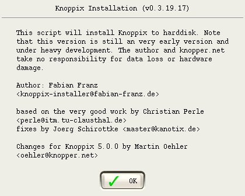After the introductory screen we select 'Install' since we haven't yet had Knoppix on this machine.
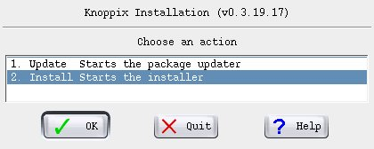But before starting the installation, there might be a decision or two needed:
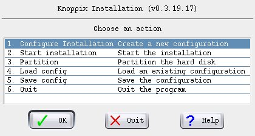Initially I had tried to choose 'Knoppix' since I knew it from CD - but ran into problems. Debian worked fine, despite being the so-called "unstable" version.
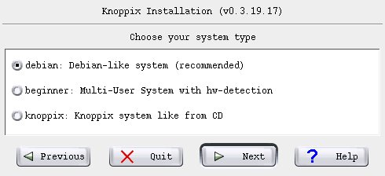Other than the swap partition there wasn't much choice.
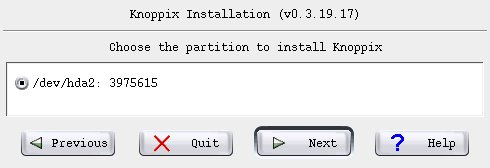I really wanted ext2 but that not being an option we (temporarily) live with ext3.
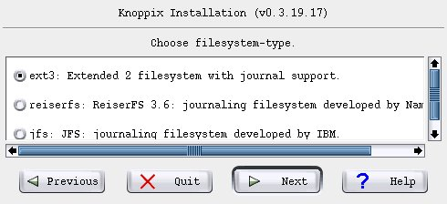Your full name is, of course, up to you.
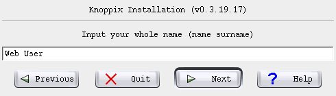As is, ahh, your user name...
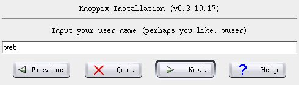...and password.
Note the option not to hide the password as you enter it. In my book that is a sign of professionalism. This is quality software. Leave it up to me to decide whether it is safe to show what I am typing. No one can know in advance whether I am in a place where it is safe for me to look at the password as I enter it. Blindfolded by people who (maybe) think they are helping to make passwords secure, I am normally forced to use very weak passwords to ensure the ability to enter them correctly again. Believe me, if you can touch-type, you can re-enter the same sequence twice and not know what it was!
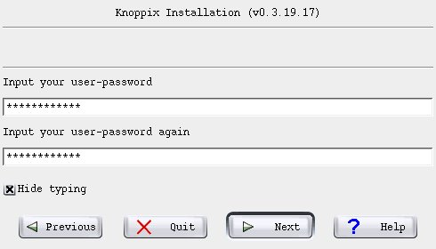Now, we choose the root password...
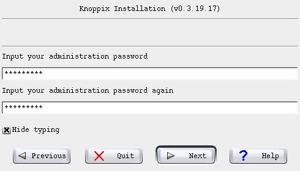...and the host name.
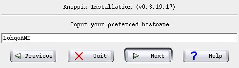No need to worry about whether to tromp on the MBR - we're overwriting the entire thing, Master Boot Record included.
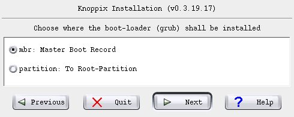OK - we have now reached the critical point! Take a deep breath, and start the installation.
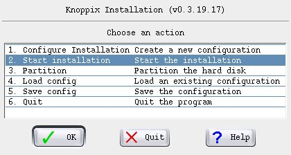Yes, do save the configuration (otherwise, Knoppix bails out.)
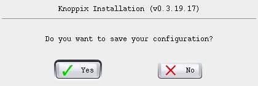Here is one last chance to review things.
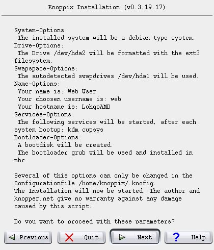And now a couple of informative windows to which no response was needed (I did reject creation of a boot floppy at one point).
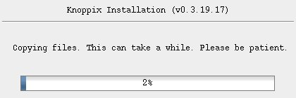There were many more such informative windows but that essentially was the entire installation. Pretty tame, right?
By today's standards this machine with 64 MB is so short of memory that almost no current OS could run on it. Even Knoppix can't, without help. Giving it a large (factor of 4) swap partition makes it possible for the system to install and function. But this has consequences that make doing it a judgement call: slow may be better than dead in the water, but how useful is it?
For example, OpenOffice is barely marginally useful. I used it to start this article because it gave me an HTML framework. Unlikely that I could have used it beyond that because of the "swapping" -- from hard drive to memory, which isn't there -- and thus to swap, which is on the hard drive...
And I wasn't particularly happy with the file system options. At least on this old hardware, which is never going to be run as a multi-user system, there is absolutely no need for journaling (besides, ":!sync" is powerful enough for me). So I turned it off. That, however, required adjusting the entry in /etc/fstab as well.
root@1[knoppix]# tune2fs -o ^has_journal /dev/hda2 tune2fs 1.39-wip (09-apr-2006) root@1[knoppix]# mount /dev/hda2 /mnt root@1[knoppix]# vi /mnt/etc/fstab root@1[knoppix]# head /mnt/etc/fstab # /etc/fstab: filesystem table. # # filesystem mountpoint type options dump pass #/dev/hda2 / ext3 defaults,errors=remount-ro 0 1 /dev/hda2 / ext2 defaults,errors=remount-ro 0 1 <<=== here proc /proc proc defaults 0 0 /dev/fd0 /floppy vfat defaults,user,noauto,showexec,umask=022 0 0 usbfs /proc/bus/usb usbfs devmode=0666 0 0 sysfs /sys sysfs defaults 0 0 root@1[knoppix]#
On boot, there were problems with lost IRQs. I tried several other boot parameters but they made no difference. In any case, it didn't matter: the default boot paragraph in the Grub configuration file is perfectly functional.
Some versions of Linux mount external devices automatically. This is not the case with Knoppix. I like to do "tail /etc/fstab" to find out what has just been made available and then mount whatever it is. Alternatively, you can just wait for hotplug to open a window asking about it and let it mount the device.
But the entries in /etc/fstab are not always appropriate. For example, if the entry for /floppy includes vfat, it may be necessary to mount it as "mount -t ext2 /dev/fd0 /floppy".
I also had considerable trouble with the UID/GID inserted into /etc/fstab by Knoppix on hotplug. Since there is no user or group "knoppix", I had to remove them to be able to mount as other than root:
web@lohgoamd:~$ tail -3 /etc/fstab /dev/hda1 /media/hda1 auto noauto,users,exec 0 0 # added by knoppix /dev/sda1 /media/sda1 vfat noauto,users,exec,umask=000,shortname=winnt,uid=knoppix,gid=knoppix 0 0 web@lohgoamd:~$ su password: root@lohgoamd:/home/web# vi /etc/fstab root@lohgoamd:/home/web# exit web@lohgoamd:~$ tail -3 /etc/fstab /dev/hda1 /media/hda1 auto noauto,users,exec 0 0 # added by knoppix /dev/sda1 /media/sda1 vfat noauto,users,exec,umask=000,shortname=winnt 0 0 web@lohgoamd:~$ mount /media/sda1/ web@lohgoamd:~$
|
Category: Old hardware
So what should we do, long-term, with old -- really old -- hardware? With a notebook likely there isn't much that can be done. But perhaps for an old PC it would be possible to obtain appropriate memory chips -- the most important consideration in improving performance -- such that it becomes responsive enough for use with OpenOffice and Co. |
Linux is supposed to be able to deal well with "old" hardware. True? I certainly think so. This test was unfair in the sense that it involved a notebook. They are notorious for creating problems... proprietary stuff is like that.
In booting this now-ancient notebook, Knoppix had far less trouble than my favorite distribution at the time. PCMCIA was a significant problem then. With Knoppix -- ho, hum... all my notes about "noacpi" and "nopcmcia" as kernel boot parameters were suddenly irrelevant.
But when is this a reasonable thing to do? I already mentioned that in my estimation, in this environment OpenOffice is effectively unusable because it's egregiously slow. Perhaps OK for collecting e-mail? Learning how to use OpenOffice? With only a serial interface available, this machine won't be used to access the Internet anymore.
I still haven't decided whether/how to use this newly available resource. Somehow, it seems inherently unreasonable to expect up-to-date desktop performance from old hardware, regardless of how recent the software release may be.
Perhaps I should have tried Damn Small Linux -- I didn't. Knoppix is BIG. Their 5.0 version on CD belongs in your tool-box but it isn't a server, and it wants X and KDE. That's a bit too rich for a basic system.
So, what should we do, long-term, with old -- really old -- hardware? With a notebook likely there isn't much that can be done. But perhaps for an old PC it would be possible to obtain appropriate memory chips -- the most important consideration in improving performance -- such that it becomes responsive enough for use with OpenOffice and Co.
Nonetheless, I had no trouble using it -- appropriately -- to write this article. As so often in life, a matter of picking and choosing one's tools (in this case Opera and Firefox and vi) and how one uses them.
The procedure in this situation is almost identical, so I won't bother with screen-shots that are the same. More important are the preparations beforehand and what might have to happen afterwards.
In this case, Knoppix is not supposed to take over the entire hard drive but just occupy one partition. If you don't have a partition available, likely it is best to first re-partition with familiar tools before starting the installation process. At least that's what I chose to do.
One of the nice things about using Knoppix is that installation does not take place in an unfamiliar and restricted environment; it is done through a script that runs after having booted Knoppix. In other words we have a familiar Linux environment, multiple windows and virtual terminals, and should the need arise, can do something that wasn't anticipated without having to cancel the installation and start over.
The installation script shows available partitions and asks you to select one. Any partitions that are too small for Knoppix won't be included in the list, so if you want a particular partition to be used and it isn't offered, you will have to cancel installation and increase the size of that partition (very often, that requires re-booting to get the system to use the new partition table). Unfortunately, Knoppix doesn't tell you this magic number. The DVD version of Knoppix 5.0.1 required about 11.5 GB.
Since this machine already has a couple of installations, it wouldn't be appropriate to replace the MBR - but that doesn't seem to be an option. So, let's back it up to a memory stick for later re-installation (thanks to Kyle Rankin):
sudo dd if=/dev/hda of=/media/sdb1/mbr_pc2 bs=512 count=1
After installation, restore the MBR (with a block size to omit the partition table) with something like this:
sudo dd if=/media/sdb1/mbr_pc2 of=/dev/hda bs=446 count=1
By the way, having to do it this way isn't necessarily a bug but can be considered a feature: you don't have to figure out what Grub needs in order to boot Knoppix. After installation, I copied /boot/grub/menu.lst to /media/sdb1/knoppix_grub and later copied the relevant sections from it to the file menu.lst in the partition normally used for booting.
Although this worked, it was Debian and I was still interested in having Knoppix as I know it. And as it turned out, this wasn't particularly difficult: when given the option to do so, save the configuration file somewhere convenient, then make modifications as desired. Here is what I used.
Having done that, you will need to load the configuration when given the opportunity before starting installation.
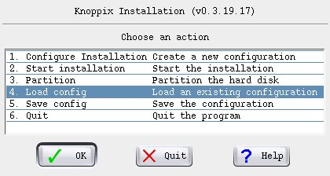The screen where you can review the installation options then reflects these changes.
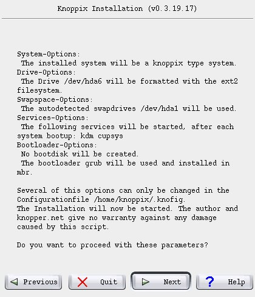Strangely enough, booting failed with an error message from Grub. The command "savedefault" was followed by "Error 15: File not found". I didn't want to change the default anyhow and just commented out that command. Here is what I added to menu.lst. Since making that change, there have been no problems booting.
By today's standards this PC is getting on in age -- it's almost 3 years old. Something newer would definitely boot a bit faster: it takes some 5 minutes from the point in time that Grub is told which partition to boot. No surprise, considering that Knoppix goes through its usual check of available hardware. Maybe Debian would be better?
Quite some time ago, I was playing with a system that had an option to write status information to the swap space when the system was shut down. This could then be used on boot to speed the process up. I haven't looked for this with Knoppix, but it seems like a worthwhile idea.
One of the reasons that installation is so easy is that there are no confusing questions about what software to install. The downside is that an installation is way over 4 times the size of what I typically install with SuSE. Well, today hard drives are huge and cheap.
Worth note is that both SuSE and Knoppix start user IDs with 1000 -- I wonder if that has to do with conformance to LSB? Well, maybe not: just checked and Fedora Core 6 uses 500 as did SuSE a couple of releases back. Heck, I dunno. At least on a SuSE machine making an existing /home available should be possible (a task for another day.) The name change of the first user from whatever to knoppix, I could live with. Yeah, I know, that's not useful for a big environment -- but this is a small home office.
Before connecting to a network, you ought to consider following the advice of Klaus Knopper and modify /etc/sudoers. I did what he suggested and you can see that here.
The use of virtual terminals is different from that of SuSE or Red Hat; X runs on 5 rather than 7. Not a problem, but I did have to go looking the first time I wanted to return to KDE after having used a command line in a VT.
Although Knoppix belongs in everybody's tool box, it may not be your choice for a desktop environment. However, it is interesting having essentially the same system (5.0 vs 5.0.1) on both my notebook and my PC. I am looking forward to gaining more experience with this configuration once networking is set up and it is possible to do things like using X11 forwarding to start OpenOffice on the PC and use it from the notebook.
Talkback: Discuss this article with The Answer Gang
(Note: mail that does not contain "linuxgazette" in the subject will be
rejected.)
 Edgar is a consultant in the Cologne/Bonn area in Germany.
His day job involves helping a customer with payroll, maintaining
ancient IBM Assembler programs, some occasional COBOL, and
otherwise using QMF, PL/1 and DB/2 under MVS.
Edgar is a consultant in the Cologne/Bonn area in Germany.
His day job involves helping a customer with payroll, maintaining
ancient IBM Assembler programs, some occasional COBOL, and
otherwise using QMF, PL/1 and DB/2 under MVS.
By Víctor Luaña
Universidad de Oviedo, Departamento de Química Física y Analítica, E-33006-Oviedo, Spain.
[ The author had specifically requested that we keep
the large font used in his article in order to match the font size of the
equation images; I agreed, since the two would look disproportionate otherwise.
My apologies to anyone whose eyeballs exploded due to the rapid decompression.
-- Ben ]
gnuplot's internal programming capabilities are used to plot the continuous and segmented versions of the spirograph equations. The segmented version, in particular, stretches the program model and requires the emulation of internal loops and conditional sentences. As a final exercise, we will develop an extensible mini-language, mixing gawk and gnuplot programming, that lets the user combine any number of generalized spirographic patterns in a design.
A PDF version of this article is available for archiving and printing.
Imagine the movement of a small circle that rolls, without slipping, on the inside of a rigid circle. Imagine now that the small circle has an arm, rigidly attached, with a plotting pen fixed at some point. That is a recipe for drawing the hypotrochoid, a member of a large family of curves including epitrochoids (the moving circle rolls on the outside of the fixed one), cycloids (the pen is on the edge of the rolling circle), and roulettes (several forms rolling on many different types of curves) in general.
The concept of wheels rolling on wheels can, in fact, be generalized to any number of embedded elements. Complex lathe engines, known as Guilloché machines, have been used since the 17th or 18th century for engraving beautiful designs onto watches, jewels, and other items of fine craftsmanship. Many sources attribute the first use of Gilloché engravings on a watch to Abraham-Louis Breguet in 1786, but the technique was already in use on jewelry. Ancient machines are still being used, and can be seen at the RGM Watch Company Web pages. Intricate Guilloché patterns are usually incorporated on bank notes and official documents to prevent forgery. The name "Spirograph" comes, actually, from the trade name of a toy invented in 1962 by Denys Fisher, a British electronic engineer, and licensed to several toy companies over the years.
Our purpose, however, is not to explore the history or even the mathematical aspects of the Spirograph decorations: our interest is centered on the techniques needed to use gnuplot as the drawing engine of the cycloid-related curves.
Section II presents a simple derivation for the hypotrochoid equations and discusses a generalization to any number of rolling wheels described by F. Farris. Section III describes the techniques required to draw the cycloid-related curves with gnuplot. From the use of complex arithmetic to the simulation of an implicit do loop and the recursive definition of user functions, gnuplot offers a large capability for the creation of algorithmic designs. The techniques discussed in Section III are embedded within a simple gawk filter that reads a formal description of a cycloid pattern and uses gnuplot to produce the final plot. The design of this filter is the subject of Section IV.
Figure 1 shows the formation of a hypotrochoid and will help us in determining the parametric equations for the curve. Three lengths determine the shape of the curve: R, the radius of the fixed circle; r, the radius of the moving circle; and p, the distance from the pen to the moving circle center. The center of the fixed circle, point O, will serve as the origin of the coordinate system. Points O' and P designate the current position of the rolling circle center and of the pen, respectively.

Figure 1 Geometry for the hypotrochoid equations. The
grayed figure corresponds to R=9, r=2, and p=3.
The current position for O' is easily described in circular
coordinates: fixed length  and variable
angle
and variable
angle  . This is easily translated into Cartesian
coordinates:
. This is easily translated into Cartesian
coordinates:

Similarly, the position of the pen relative to O' is also
simple to describe in circular coordinates: fixed length
 and variable angle
and variable angle  . In Cartesian coordinates:
. In Cartesian coordinates:

The angles  and
and  are not independent,
however. The circles roll without slipping. Hence, the arc
are not independent,
however. The circles roll without slipping. Hence, the arc
 on the fixed circle must be identical
to the arc
on the fixed circle must be identical
to the arc  on the
rolling circle. The relationship
on the
rolling circle. The relationship  follows immediately. This equation is easy
to interpret in terms of a gearing mechanism. The fixed and
rolling wheels must have teeth of equal size to be able to
engage together. Therefore, the number of teeth must be
proportional to the wheel perimeter and, equivalently, to the
wheel radius.
follows immediately. This equation is easy
to interpret in terms of a gearing mechanism. The fixed and
rolling wheels must have teeth of equal size to be able to
engage together. Therefore, the number of teeth must be
proportional to the wheel perimeter and, equivalently, to the
wheel radius.
Putting all this together, the current position of the pen
relative to the fixed center O is given by  , or, equivalently:
, or, equivalently:

The equations admit r and p being either positive or negative. A negative r would represent a moving wheel rolling on the outside, rather than the inside, of the fixed circumference. I.e., it will be a epitrochoid curve. Choosing p=r with r positive or negative will produce hypo or epicycloid curves, respectively.
It is easy to see that multiplying the three parameters R,
r, and p by a common factor produces a global scaling of the
curve dimensions but does not change its shape. On the other
hand, the figure traced by this parametric equation closes only
if R/r is a rational number. Let us assume that n and m are the
smallest integers such that |R/r| = n/m, and let g be the
greatest common divisor of n and m (gcd(n,m)). The curve will
then close after a total rotation of m/g times  (
( ) and it will show n/g lobes or
spikes.
) and it will show n/g lobes or
spikes.
The equations can be generalized for three or more wheels rolling one inside the other, and Frank Farris did so in a celebrated article in Mathematics Magazine. At this level, it is better to give up a direct simulation of the physical engine gears and examine the equations directly. A very compact and powerful notation is obtained by using complex variables, with the convention that the real and imaginary parts represent the x and y Cartesian coordinates, i.e., z=x+iy where i is the imaginary number. The general Farris equations are:
![z(t) = \sum_{k=1}^n a_k e^{i2\pi(n_k t+\theta_k)}, t \in [0,1],](misc/luana/eqn-04.png)
where n is the number of engaged wheels: wheel k has its
center fixed on a point of the circumference of wheel (k-1). On
each wheel,  is related to the radius,
is related to the radius,  to
the rotation speed, and
to
the rotation speed, and  is an initial phase angle.
Farris demonstrated that the z(t) curve has g-fold rotational
symmetry if all the pairwise differences
is an initial phase angle.
Farris demonstrated that the z(t) curve has g-fold rotational
symmetry if all the pairwise differences  have g as their greatest common divisor.
have g as their greatest common divisor.
The two wheel parametric equations can be readily translated into the following gnuplot drawing code:
set terminal png size 600,600 \
x000000 xffffff x404040 xff0000
set output "fig-spiro02.png"
set size ratio -1
set nokey
set noxtics
set noytics
set noborder
set parametric
#
x(t)=(R-r)*cos(t) + p*cos((R-r)*t/r)
y(t)=(R-r)*sin(t) - p*sin((R-r)*t/r)
#
R=100.0; r=2.0; p=80.0
set samples 2001
#
plot [t=0:2*pi] x(t),y(t)
The code saves the image as a PNG file, useful for insertion on a Web page, but any gnuplot terminal could be used. An EPS/PDF vector file with white background is better for a printed version of the document, whereas an unscaled PNG raster file with black background may look better and render faster in a Web browser. The use of the PNG terminal is a little tricky, as there appear to be two versions that differ in the recognized syntax. If gnuplot chokes on the png size 600,600 part, try using png picsize 600 600 instead. Notice that we have removed the default axes, labels, and tics. Identical scaling of the axes has also been enforced, to avoid distortion of the image. The result can be seen in Fig. 2.

Figure 2 Hypotrochoid curve for: R=100, r=2 and
p=80.
A little exploration will reveal that: (a) p=0 produces a circle; (b) an ellipse results if R=2r and p≠r, its axes being (r+p) and |r-p|; (c) the hypocycloids are obtained by choosing p=r; (c) R=2r=2p gives rise to a line of length 2a; (d) negative values for p and/or r results in some extraordinary specimens.

 and speeds [11,-5,3]")
 and speeds [11,-5,3]")
 and speeds [11,-5,-3]")
The beauty and diversity of the trochoid curves call for a journey of exploration and discovery. This is much easier if the gnuplot code is embedded in a text or graphical user interface (TUI vs. GUI). A simple csh script can serve as a rudimentary but effective wrapper:
#! /bin/csh
set code = $0:t
if ($#argv < 3) goto help
set n1 = $1; set n2 = $2; set n3 = $3
set a1 = 1.0; set a2 = 1.0; set a3 = 1.0
set s1 = 0.0; set s2 = 0.0; set s3 = 0.0
if ($#argv >= 4) set a1 = $4
if ($#argv >= 5) set a2 = $5
if ($#argv >= 6) set a3 = $6
if ($#argv >= 7) set s1 = $7
if ($#argv >= 8) set s2 = $8
if ($#argv >= 9) set s3 = $9
cat << EOF | gnuplot
set size ratio -1
set nokey
set noxtics
set noytics
set noborder
set parametric
#
n1p = {0,1}*2*pi*${n1}
n2p = {0,1}*2*pi*${n2}
n3p = {0,1}*2*pi*${n3}
s1p = {0,1}*2*pi*${s1}
s2p = {0,1}*2*pi*${s2}
s3p = {0,1}*2*pi*${s3}
z(t) = ${a1}*exp(n1p*t+s1p) \
+ ${a2}*exp(n2p*t+s2p) \
+ ${a3}*exp(n3p*t+s3p)
#
set terminal png size 600,600 x000000 \
xffffff x404040 xff0000 xffa500 x66cdaa \
xcdb5cd xadd8e6 x0000ff xdda0dd x9500d3
set output "fig-spiro03.png"
#
set samples 2001
plot [t=0:1] real(z(t)),imag(z(t))
EOF
xv fig-spiro03.png
exit(0)
help:
cat << EOF
USE: $code n1 n2 n3 [a1 a2 a3 [s1 s2 s3]]
PURPOSE: Plot Farris wheels on wheels on wheels
curve for (n1,n2,n3,a1,a2,a3,s1,s2,s3).
Default value for a1, a2, a3: 1.0.
Default value for s1, s2, s3: 0.0.
EXAMPLE: $code 1 7 -17 1 0.5 1.0/3 0 0 0.24
EOF
In this example, we have used Farris equations for three wheels. Complex numbers (notice the {0,1} constant, equivalent to the imaginary number, i, in gnuplot syntax) are used to evaluate the z(t) function, but their real and imaginary parts must be explicitly extracted and passed to the plot instruction. Therefore, z(t), is actually called twice for each point. Perhaps future gnuplot versions will recognize a single complex expression as a complete argument of the parametric plot. In any case, the complex arithmetic provides a very compact notation.

|

|

|

|

|

|
The script, on the other hand, can be called with anything from 3 to 9 parameters. The three obligatory parameters are n1, n2, and n3, that adjust the relative speed of the three wheels. The next group of three are a1, a2, and a3, related to the relative size of the wheels, and a default value of 1.0 is assumed for any parameter not given in the input. The last group corresponds to the initial phase angles, s1, s2, and s3, with a default value of 0.0. The script parameters are used only within gnuplot assignments. This means that the user can enter expressions rather than single integer or real values. Some care must be taken, however, when entering fractions: use 1.0/3 and not 1/3, that would be interpreted by gnuplot as an integer division and would produce an unexpected 0.
Figure 3 represents some of the
most characteristic patterns exhibited by three rolling wheels
of identical size. These patterns occur when the wheel speeds,
[n1,n2,n3], their differences,  , and the greatest common divisor of
the differences,
, and the greatest common divisor of
the differences,  ,
satisfy appropriate conditions. Large values for g produce
highly symmetric and generally nice motifs. Some of the most
pleasant designs, however, show only a moderate symmetry and a
more subtle interplay between regularity and uniqueness.
,
satisfy appropriate conditions. Large values for g produce
highly symmetric and generally nice motifs. Some of the most
pleasant designs, however, show only a moderate symmetry and a
more subtle interplay between regularity and uniqueness.
Some trends, found by the observation of a large number of
cases, can help in the design of a particular motif. Assuming
that the three wheels are of equal size, differences like
(-g,2g,3g) can produce g-points stars, whereas g-petal daisies
tend to happen for ([+/-]2g, [+/-]g, [+/-]g) differences. Palm
leaves and nephroids occur when two of the  differences coincide, in absolute value, with two
of the wheel speeds. Crosses and Maasai shields are rara
avis that require a large number of conditions to be met:
the sum of all wheel speeds must be odd (positive or negative),
g must be a power of 2, and the sum of two of the differences
must be equal to the third.
differences coincide, in absolute value, with two
of the wheel speeds. Crosses and Maasai shields are rara
avis that require a large number of conditions to be met:
the sum of all wheel speeds must be odd (positive or negative),
g must be a power of 2, and the sum of two of the differences
must be equal to the third.
Changing the wheel sizes will also produce significant variations in the drawings. Adding small phase angles to one or more wheels can be used to introduce some irregularity into an otherwise too symmetric and uninteresting motif.

 and speed [29,-11,-3]")
 and speed [29,-11,-3]")
 and speed [29,-11,-3]")
The two previous examples have used the spirographic equations with a large number of sample points, large enough to show the true nature of the curves: both continuous and derivable, as they are the sums of exponential functions. The Web has plenty of simplistic Java applets that poorly render the equations by using a small number of points per roll. This method, albeit a wrong representation of the true curves, can produce quite pleasant images. In a declarative language, this type of plot would be produced using a simple loop:
nturns = abs(rsmall) / gcd(Rbig,abs(rsmall))
M = nturns * resolution
inumber = {0,1}
for (k=0; k<=M; k++) {
ang1 = inumber * k * 2*pi/M
ang2 = ang1 * (rsmall-Rbig)/rsmall
z[k] = (Rbig-rsmall)*exp(ang1) + p*exp(ang2)
if (k>0) { PLOT LINE from z[k-1] to z[k] }
}
where resolution holds the number of sample points used for each roll around the main (fixed) wheel and nturns is the number of times this wheel must be rolled around. The above pseudocode assumes the use of complex arithmetic and the availability of a gcd() function.
Loops and conditional expressions are not part of the gnuplot language, but there are ways around this limitation. First, an implicit loop is automatically performed on each plot instruction. We just have to be careful to fix an appropriate samples value and a correct range for the independent variable (the parametric variable, in our case). The ternary operator (a?b:c, evaluate and return b if a is true, and c otherwise) can be used as a restricted conditional test. gnuplot's user-defined functions can be recursive, on the other hand, and this can also be used as a restricted form of loop.
The next example uses all of the above ideas. Notice, in particular, the recursive definition of the gcd() function, that implements Euclid's algorithm for the greatest common divisor. The calculation of the number of turns and sample points is simplified by assuming that R and r are integers.
set size ratio -1 set nokey set noxtics set noytics set noborder set parametric # x(t) = (R-r)*cos(t) + p*cos((R-r)*t/r) y(t) = (R-r)*sin(t) - p*sin((R-r)*t/r) # # Greatest common divisor: gcd(x,y) = (x%y==0 ? y : gcd(y,x%y)) # R = 100; r = -49; p = -66; res = 10 # rr = abs(r) nturns = rr / gcd(R,rr) samp = 1 + res * nturns set samples samp # plot [t=0:nturns*2*pi] x(t),y(t)

Figure 4 Curve stitching patterns from the hypotrochoid
curve with: R=100, r=2 and p=70. The three patterns correspond
to a resolution of 75, 125 and 175 sample points,
respectively.
The last example works well for drawing a single curve with a given resolution, but the most interesting patterns are obtained by mixing several renderings of one or more curves with well chosen resolutions. To do this within a single gnuplot run, we have to take explicit control of the angles used for each equation. For instance:
set terminal png size 600,600 x000000 \
xffffff x404040 xff0000 xffa500 x66cdaa \
xcdb5cd xadd8e6 x0000ff xdda0dd x9500d3
set output "fig-spiro05.png"
set size ratio -1
set nokey
set noxtics
set noytics
set noborder
set parametric
#
# General parametric equations:
x(t,R,r,p) = (R-r)*cos(t) + p*cos((R-r)*t/r)
y(t,R,r,p) = (R-r)*sin(t) - p*sin((R-r)*t/r)
#
# Values for the dummy parameter:
t(i,n) = i*2*pi/n
#
# Greatest common divisor:
gcd(x,y) = (x%y==0 ? y : gcd(y,x%y))
#
# The different curves:
R1 = 100; r1 = 2; p1 = 70; res1 = 75
R2 = 100; r2 = 2; p2 = 70; res2 = 125
R3 = 100; r3 = 2; p3 = 70; res3 = 175
#
nseg1 = res1 * abs(r1) / gcd(R1,abs(r1))
nseg2 = res2 * abs(r2) / gcd(R2,abs(r2))
nseg3 = res3 * abs(r3) / gcd(R3,abs(r3))
n12 = (nseg1 * nseg2) / gcd(nseg1,nseg2)
nsamp = (n12 * nseg3) / gcd(n12,nseg3)
nsamp1 = nsamp + 1
set samples nsamp1
#
plot [i=0:nsamp] \
x(t(i,res1),R1,r1,p1),y(t(i,res1),R1,r1,p1) \
, x(t(i,res2),R2,r2,p2),y(t(i,res2),R2,r2,p2) \
, x(t(i,res3),R3,r3,p3),y(t(i,res3),R3,r3,p3)
The result of this code is represented in figure 4. The intricate embroidery of the three curve representations, only recognizable by their different colors, show an appealing and delicate beauty that deserves further exploration. However, using the same plot order for the three is far from being effective and poses many problems for its generalization to an arbitrary number and class of representations. In particular, the number of sample points has to be a minimum common multiple of the best number of sample points for each independent figure.
In the case of figure 4, the three curves would need 75, 125 and 175 sample points, respectively, but plotting the three simultaneously requires 2625 samples, instead. So, the first component is repeated 35 times, 21 times the second, and 15 times the third. This repetition will add substantially to the plotting time but, if the final result is written to a raster format like PNG, there will be no increase on the size of the final file. If we use a vector format like EPS or SVG, however, the file size will also increase substantially.
We can avoid the unnecessary repetition by turning to a two-pass method. In the first pass, each curve is created independently in gnuplot, and its points are saved in a file using a set terminal table output mode. The second pass combines the points from all the previous files into a single design, that is saved in whatever raster or vector format seems appropriate. Instead of providing an example of this technique, we will use the idea for our final and most ambitious project.
All the techniques developed in the previous section can be made more accessible if we design a simple way of describing a plot and we create the tool for translating the description to the appropriate gnuplot instructions. The perfect translation tool would hide the details of the gnuplot syntax from the user while maintaining an appropriate degree of flexibility.
We have written an experimental translator (See/download the translator) in awk for rapid prototyping and easy experimentation. We are going to describe the language currently recognized. The following notation will be used. Fixed names are written in boldface. Variable data appears in italica, enclosed within square brackets, [], if the data is optional. The data type is indicated by the suffix of the variable name: var.s (a string sequence); var.i (an integer); var.r (a real value); var.c (a complex value in gnuplot notation, i.e., {real_part,imaginary_part}); var.re and var.ce (a real or complex expression, like pi*{0,1}/12). Missing values are forbidden within the integer, real and complex data and expressions.
The instructions currently implemented in our translation script are:


var = var_ini
while (var does not reach var_end) do
# compute and draw a new installment
# of the current curve
var = var_ini + (var_inc)
end
The var.s string can be used as a variable in the
definition of the curve (see the examples below). The
var_inc.r value can be negative. There is currently a limit
of 1000 times for the number of copies produced by this loop.

|

|
| (a) | (b) |

|

|
| (c) | (d) |
Some examples of the above rules in action may help to understand the possibilities. The first example, represented in Fig. 5(a), shows the use of a simple trochoid curve with a small sampling:
project example01
terminal png size 600,600 x000000
curve 10
addterm trochoid 100 -49 76
The second example shows the use of a loop instruction to create copies of a curve, applying a little phase rotation and size change to each new copy. See the resulting image in Fig. 5(b):
project example02
terminal png size 600,600 x000000
curve
#style lt 1
loop kkk 0 20 1
addterm wheel 4*0.98**kkk -3 kkk/200.
addterm wheel 5*1.02**kkk 2 kkk/200.
The third image, Fig. 5(c), corresponds to a multiple copy version of three Farris wheels:
project example03
terminal png size 600,600 x000000
curve
style lt 1
loop kkk 0 20 1
addterm wheel 4 -5 -kkk/60.
addterm wheel 3 2 kkk/60.
addterm wheel 2 9 0.
Our last example shows a decoration around some text. The decoration was designed by starting with a large Farris wheel and adding two other much smaller wheels, always maintaining an 8-fold symmetry. The use of gfactors provides an easy way to stretch an otherwise round motif.
project example04 terminal postscript eps enhanced color "Helvetica" 48 gfactors 1.4 0.7 curve style lt 1 loop kkk 0 10 1 addterm wheel 200*0.96**kkk 1 0. addterm wheel 10*0.96**kkk 9 0. addterm wheel 9*0.96**kkk 23 0. label 0 0 G_nuplot rules!
We should not end this report without mentioning, at least, some of the excellent Java applets that can be found on the Internet (Paramo2004, Little2001, Little1997, Garg, Ziring2000). A well conceived GUI can be of great help in the interactive exploration of a designated subset of the vast Spirograph parametric space. It is not the only approach, however. A custom mini-language can give access to an arbitrarily large parametric space and hide the dirty details of code generation. The gnuplot engine has been used for years to produce professional quality plots. Some of its drawbacks, like the lack of true loop mechanisms, can be eliminated with some ingenuity or by embedding the engine within a more general programming tool.
The author thanks the Spanish Ministerio de Educación y Ciencia for financial support under project BQU2003-06553.
Talkback: Discuss this article with The Answer Gang
![[BIO]](../gx/authors/luana.jpg)
I'm a Spaniard, living in Oviedo, close to the northern coast of Spain. Married, with a teenager daughter ("hey, dad, this spiro thing is cool!"), I teach Physical Chemistry and do research on Theoretical Chemistry for a living. I have programmed on all sort of machines, from the mythical HP41C to the not less mythical Cray X and Y supercomputers (the end of an era left us short of a good crazy machine), for the last 25 years. I was captivated by linux around 1993, when our research group discovered the first Slackware distribution. Our current infrastructure is based on Debian and includes a half-mounted Top500 wannabee shared among many research groups.
On the left: self portrait in front of a mirror (Feb. 2006). Yes, I truly love photography, but I don't like appearing on images myself. Anyway, this self portrait has something that I don't dislike too much. The band on my left hand has disappeared long ago.
The first part of this article introduced the basic idea of using an inexpensive USB stick instead of a laptop for home/work demands. This part turns the bare-bones script (a glorified wrapper around tar) into a robust, conveniently usable day-to-day solution.
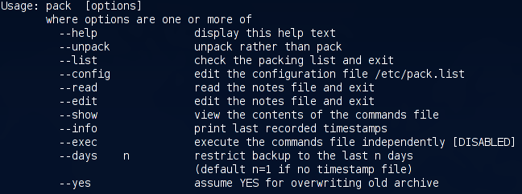One of the main drawbacks of the basic version is that one has to explicitly state the maximum age of files (--days x option), and this is the first thing that can/will go wrong - especially when synchronising only once in a while. Imagine taking your last batch of files home, going on vacation and then coming back after some weeks. The question then is 'When was it I last synced my files from work ... 3 days or ... wait a minute ... could be 5 ... better make it 7?' This is tedious, therefore a timestamping mechanism is implemented.
The second aspect that complicates usage is that directories can be synchronised as they grow, but not as they shrink - and this is again tedious to keep track of. A simple script to automate this process is presented.
The remainder of this article contains brief discussions of further add-ons. These can be used as-is, but the intention is rather to illustrate that a usable solution requires neither expensive hardware nor complicated programs.
|
Category: File synchronisation
Imagine taking your last batch of files home, going on vacation and then coming back after some weeks. The question then is 'When was it I last synced my files from work ... 3 days or ... wait a minute ... could be 5 ... better make it 7?' |
To recap the last part, the main script uses a configuration file, $config, which stores (tagged) names of directories or files that are to be tracked. A good idea is to put it in a fixed location (e.g., /etc/pack.list), and allow all USB stick users write access to that file. Then, it is possible to simply add a new directory, in the following manner:
pwd >> /etc/pack.list
To resolve the question 'But how do I keep my configuration files themselves synchronised?', a second level of configurability is implemented in form of the essential() routine. It provides robustness against overwriting by tracking a few selected, important files - among these $config itself:
sub essential {
open( ESSENTIAL, ">$tmpconf") || die "can't store essential files in $tmpconf: $!\n";
print ESSENTIAL "/home/gerrit/.{bash?[place]*,alias,functions,dircolors}\n";
# ...
print ESSENTIAL "${config}\n";
close ESSENTIAL;
}
An alternative is to always carry around the configuration file list on the stick. There is support for such a solution: a directory $confdir = $flashdir/.conf.d exists, and is heavily used by the other functions that will now be discussed.
It is easy to get the number of days (in the --days x option) wrong, and then one ends up with stale files - a nuisance. The timestamping mechanism is superior to the day-wise backup, and makes the usage much simpler. It is based on recording a timestamp value in a file, much like the files anacron(8) uses. The important bits are:
If you look inside the timestamp file, there is just a single number (epoch time in seconds). It is easy to make the contents human-readable:
alias seconds_to_timestring="perl -le 'for (<STDIN>) { print \$_=localtime(\$_) }'"
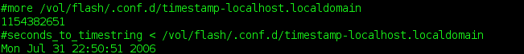
With pack --info, you can see timestamps of all hosts you use; here is an example screenshot. (The script recognises which timestamp is local.) To bootstrap this mechanism, the --days x option is still needed - once, for initial creation of timestamps.
Since several functions (archive label and timestamping) depend on distinct hostnames, the source and target PCs should use different ones (e.g., not both 'localhost.localdomain').
An archive can only transport, not delete, files. While it is not possible to mimic the --delete flag of e.g. rsync, a useful approximation is possible, and not too complicated to implement. It is based on executing commands that change the structure of directories (e.g., new owners, file deletion, file access times ...) locally and, when successful, recording them for later use. The principle is simple: in essence, the script does the following:
cmds=$confdir/commands while read -p'#' line; do eval $line && echo $line >> $cmds; done
The actual script is a bit more sophisticated: it keeps track of the current working directory (as most commands use relative, not absolute directory names); performs alias expansion; and uses 'su' to track file ownership.
The output generated by this script is in turn an executable, 'write-once-execute-once', shell script. If you supplied such a file in $confdir, pack will automatically execute it within the execute_cmds() routine - which looks like this:
sub execute_cmds {
(-s $cmds) || return; # ignore empty files
# ...
system "bash $cmds"; # execute commands
system "mv $cmds /tmp/commands"; # store in /tmp
}
To merely see what would happen (without executing), you can use pack --show.
Here is an example
where a kernel is removed both locally and remotely (the remote side
is shown further below). When using such a script, asterisks and
other shell-special characters need to be escaped, as shown in this example.
Often the one-off situation arises to just carry some files home once, e.g., some source files or PDF files to read. To provide a simpler alternative to day-to-day tracking, there are two archives with special names that will automatically be unpacked:
The former is useful if there is overlap with files that are already tracked; the latter is a good all-round default. The convenience of this solution is the automatic unpacking via the script - no more forgotten archives. To create either of the two files, use the -j option (bzip2 compression) and the -P option (to not strip leading '/') with tar. For example, I often do this:
tar -jcpPvf /vol/flash/add.2 /usr/src/patches/ /home/bin
|
Category: Security
Using a synchroniser system, potentially with command execution, short-circuits all the hard work other hackers have done to make your Linux box a safe place. |
Archives of tracked files need to be unpacked before any running program has a chance of overwriting them. Un-packing is thus best performed either at boot-time or before the window manager starts. KDE for instance provides a place for such executables in ~/.kde/Autostart. Since not everyone uses KDE, I will present the former alternative.
But not without a BIG FAT WARNING: Using a synchroniser system, potentially with command execution, short-circuits all the hard work other hackers have done to make your Linux box a safe place. A malicious 'bad guy' could feed your computer garbage archives or venomous scripts which render your system unusable.
At the very least, use some form of authorization; a simple, but efficient, variant is presented below. The automatic unpack script is a standard SysV init script; place or symlink it into /etc/init.d and create a symlink for the appropriate runlevel. (On my Debian box, I use /etc/rc2.d/S30unpackUSB, RH/Fedora are similar and there is chkconfig support.) When invoked with the `start' argument at boot-time, the script will:
The authentication mechanism uses a MD5 hash of a well-known file. (Below, it is the script itself.)
idfile=$confdir/.idfile
serialnum=$confdir/.serialnum
md5sum $0 | tee ${serialnum} | tee "$(<${idfile})"
The $serialnum will be automatically created in $confdir. The $idfile contains the location (absolute path) of some file known only to the user. This file must be manually edited (e.g. echo `pwd`/mysecretfile > $idfile). The trick is that the file pointed to by $idfile contains the same hash value as the $serialnum. Hence, the following happens at script invocation time:
if ! [ -e "${serialnum}" -a -e "${idfile}" ] || [ "$(<$(<${idfile}))" != "$(<${serialnum})" ]
then
echo "Authentication procedure failed." >&2
exit 1
fi
This means if some malicious other person tries to compromise your computer with his forged USB stick, the process will fail if (1) there is no $serialnum on the stick, (2) there is no $idfile on the stick. Both of these could be accomplished but cost hacking and spoofing effort, and more protection is provided by number (3):
"$(<$(<${idfile}))" != "$(<${serialnum})"
Translated: 'The contents of the file pointed to by $idfile must match the contents of $serialnum'. To accomplish this, intrusive hacking is needed. If you are paranoid about security (sometimes not a bad idea), you can disable this mechanism entirely. Statistically speaking, however, the theft of a laptop is far more likely than such a planned intrusion.
Returning to the above screenshot with the local removal of a kernel, this screenshot shows the log of what subsequently happened on the remote computer. First the 'pre.2' file (a new kernel) is unpacked, followed by command execution (where the old kernel is removed), finally the main archive is unpacked.
The next extension is a kind of personal organiser for taking day-to-day notes such as important things to do, buy, or organise; telephone numbers and URLs that are not to be forgotten; and the like. It is actually very useful, as everything is in one place.
Palmtops are horribly and unnecessarily expensive. Let's code a part of their luxuriant functionality by storing notes in $confdir; here is an example screenshot. Since there are so many scripts already, a (bash) shell function is used for a change:
function note() {
test -t 0 && echo "Type in text, terminated by CTRL-D."
if note=$(fold -s) && test -n "$note"; then
echo "at $(date): ${note}" >>/vol/flash/.conf.d/notes
fi
}
The first test checks if input is from a keyboard (terminal) and prints
a prompt if so. Otherwise, it will simply pipe from stdin into the
file. This allows very practical uses such as the following:
echo "CVS commit ID was $(cat /tmp/commit-id), done at $(date)" | note
To make this a complete system, convenient access to the notes is required. One is built into the script already: notes can be accessed using pack --read. More convenient is an Autostart script (placed in ~/.kde/Autostart). This has the following core:
kedit --caption "PACK NOTES" $notes &This can easily be changed to suit your individual text viewer/editor of choice.
Nowadays, hard drive sizes of up to 500GB are no exception. However, on any such disk there are 64 bytes which, when corrupted, can create a real hell for an afternoon or two - the partition table, located in the MBR. I've experienced it more than once that an MBR became damaged at some time. I wouldn't wish the painful process of restoration to anyone.
[ ...but see "Clearing out the Master Boot Record" in issue 63. Perhaps this will convince you of the necessity of following Gerrit's advice, if nothing else will. :) -- Ben ]
Code to save the MBR on the stick is easy enough to add. Procedure save_mbr is invoked before creating the archive and will copy the MBR into $confdir. It uses rdev(8) to determine your root device:
sub save_mbr {
my $rdev = qx{/usr/sbin/rdev 2>&1};
# ...
system("dd if=$rdev of=$mbr bs=512 count=1") == 0 || warn "Cannot save MBR";
}
The warning shown in the last line will in particular appear if you don't have read access to the device - you should make sure that you do, which usually means running the script as root.
What I have presented here has evolved from real day-to-day use over the period of three and a half years.
I found the system so useful that I still prefer it to buying a laptop. Not only has it saved the expense of buying costly gadgets, it is amazing how long the lifetime of a 'cheap' USB stick actually is. The most fragile part is the connector, for which a warranty is given (usually about 10000 plug-ins and pull-outs). Mine had cracked circuits, so I must have been past that - but it was easy to fix; all that was needed was a soldering iron. On another occasion, I accidentally forgot the stick in the laundry. After drying, it worked fine ever after. I don't think a laptop would survive comparable treatment: it is strange that more expensive things are usually also more fragile.
I hope that the many programming hints throughout these two parts will aid in modifying, to fit individual ideas and requirements - creativity is not as easily exhausted as money.
Talkback: Discuss this article with The Answer Gang
By Amit Saha
Quoting from Robert Love's book Linux Kernel Development, "The Process is one of the fundamental abstractions in Unix Operating Systems, the other fundamental abstraction being files." A process is a program in execution. It consists of the executing program code, a set of resources such as open files, internal kernel data, an address space, one or more threads of execution and a data section containing global variables.
Each process has process descriptors associated with it. These hold the information used to keep track of a process in memory. Among the various pieces of information stored about a process are its PID, state, parent process, children, siblings, processor registers, list of open files and address space information.
The Linux kernel uses a circular doubly-linked list of struct task_structs to store these process descriptors. This structure is declared in linux/sched.h. Here are a few fields from kernel 2.6.15-1.2054_FC5, starting at line 701:
701 struct task_struct {
702 volatile long state; /* -1 unrunnable, 0 runnable, >0 stopped */
703 struct thread_info *thread_info;
.
.
767 /* PID/PID hash table linkage. */
768 struct pid pids[PIDTYPE_MAX];
.
.
798 char comm[TASK_COMM_LEN]; /* executable name excluding path
The first line of the structure defines the field state as volatile long. This variable is used to keep track of the execution state of the process, defined by the following macros:
#define TASK_RUNNING 0 #define TASK_INTERRUPTIBLE 1 #define TASK_UNINTERRUPTIBLE 2 #define TASK_STOPPED 4 #define TASK_TRACED 8 /* in tsk->exit_state */ #define EXIT_ZOMBIE 16 #define EXIT_DEAD 32 /* in tsk->state again */ #define TASK_NONINTERACTIVE 64
The volatile keyword is worth noting - see http://www.kcomputing.com/volatile.html for more information.
Before we look at how tasks/processes (we will use the two words as synonyms) are stored by the kernel, we need to understand how the kernel implements circular linked lists. The implementation that follows is a standard that is used across all the kernel sources. The linked list is declared in linux/list.h and the data structure is simple:
struct list_head {
struct list_head *next, *prev;
};
This file also defines several ready-made macros and functions which you can use to manipulate linked lists. This standardizes the linked list implementation to prevent people "reinventing the wheel" and introducing new bugs.
Here are some kernel linked list references:
Let us now see how the linux kernel uses circular doubly-linked lists to store the records of processes. Searching for struct list_head inside the definition of struct task_struct gives us:
struct list_head tasks;
This line shows us that the kernel is using a circular linked list to store the tasks. Thsi means we can use the standard kernel linked list macros and functions to traverse through the complete task list.
init is the "mother of all processes" on a Linux system. Thus it is represented at the beginning of the list, although strictly speaking there is no head since this is a circular list. The init task's process descriptor is statically allocated:
extern struct task_struct init_task;
The following shows the linked list representation of processes in memory:
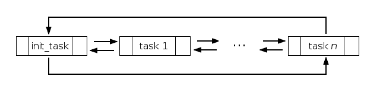
Several other macros and functions are available to help us traverse this list:
for_each_process() is a macro which iterates over the entire task list. It is defined as follows in linux/sched.h:
#define for_each_process(p) \
for (p = &init_task ; (p = next_task(p)) != &init_task ; )
next_task() is a macro defined in linux/sched.h which returns the next task in the list:
#define next_task(p) list_entry((p)->tasks.next, struct task_struct, tasks)
list_entry() is a macro defined in linux/list.h:
/*
* list_entry - get the struct for this entry
* @ptr: the &struct list_head pointer.
* @type: the type of the struct this is embedded in.
* @member: the name of the list_struct within the struct.
*/
#define list_entry(ptr, type, member) \
container_of(ptr, type, member)
The macro container_of() is defined as follows:
#define container_of(ptr, type, member) ({ \
const typeof( ((type *)0)->member ) *__mptr = (ptr); \
(type *)( (char *)__mptr - offsetof(type,member) );})
Thus if we can traverse through the entire task list we can have all the processes running on the system. This can be done with the macro for_each_process(task) , where task is a pointer of struct task_struct type. Here is an example kernel module, from Linux Kernel Development:
/* ProcessList.c
Robert Love Chapter 3
*/
#include < linux/kernel.h >
#include < linux/sched.h >
#include < linux/module.h >
int init_module(void)
{
struct task_struct *task;
for_each_process(task)
{
printk("%s [%d]\n",task->comm , task->pid);
}
return 0;
}
void cleanup_module(void)
{
printk(KERN_INFO "Cleaning Up.\n");
}
The current macro is a link to the process descriptor (a pointer to a task_struct)of the currently executing process. How current achieves its task is architecture dependent. On an x86 this is done by the function current_thread_info() in asm/thread_info.h
/* how to get the thread information struct from C */
static inline struct thread_info *current_thread_info(void)
{
struct thread_info *ti;
__asm__("andl %%esp,%0; ":"=r" (ti) : "0" (~(THREAD_SIZE - 1)));
return ti;
}
Finally current dereferences the task member of the thread_info structure which is reproduced below from asm/thread_info.h by current_thread_info()->task;
struct thread_info {
struct task_struct *task; /* main task structure */
struct exec_domain *exec_domain; /* execution domain */
unsigned long flags; /* low level flags */
unsigned long status; /* thread-synchronous flags */
__u32 cpu; /* current CPU */
int preempt_count; /* 0 => preemptable, <0 => BUG */
mm_segment_t addr_limit; /* thread address space:
0-0xBFFFFFFF for user-thread
0-0xFFFFFFFF for kernel-thread
*/
void *sysenter_return;
struct restart_block restart_block;
unsigned long previous_esp; /* ESP of the previous stack in case
of nested (IRQ) stacks
*/
__u8 supervisor_stack[0];
};
Using the current macro and init_task we can write a kernel module to trace from the current process back to init.
/*
Traceroute to init
traceinit.c
Robert Love Chapter 3
*/
#include < linux/kernel.h >
#include < linux/sched.h >
#include < linux/module.h >
int init_module(void)
{
struct task_struct *task;
for(task=current;task!=&init_task;task=task->parent)
//current is a macro which points to the current task / process
{
printk("%s [%d]\n",task->comm , task->pid);
}
return 0;
}
void cleanup_module(void)
{
printk(KERN_INFO "Cleaning up 1.\n");
}
Well, we have just started in our quest to learn about one of the fundamental abstractions of a linux system — the process. In (possible) future extensions of this, we shall take a look at several others.
'Till then, Happy hacking!
obj-m +=ProcessList.o
obj-m +=traceinit.o
all:
make -C /lib/modules/$(shell uname -r)/build M=$(PWD) modules
clean:
make -C /lib/modules/$(shell uname -r)/build M=$(PWD) clean
Talkback: Discuss this article with The Answer Gang

The author is a 3rd year Computer Engineering Undergraduate at Haldia Institute of Technology, Haldia. His interests include Network Protocols, Network Security, Operating systems, and Microprocessors. He is a Linux fan and loves to hack the Linux kernel.
From the Editor's Desk
Once again, it is time for The Answer Gang's free-for-all - The Monthly
Troubleshooter. Just as a reminder (and perhaps as a bit of stimulation for
future topics), The Troubleshooter begins as a post sent to The Answer Gang in order to create
discussion on a specific topic - one that will hopefully be interesting and
educational to our readers - and consists of a "brain dump" (i.e., a
summary of the author's knowledge) on that topic. As is usually the case,
other Gangsters jump in and contribute their own comments, clarifications,
and corrections - and the result is eventually published here, with the TAG
byline.
The important thing to note here is that the Troubleshooter
requires that initial brain dump: without it, there's no
discussion, no conversation, no new perspectives on what may be somewhat
outdated knowledge. Without it, there's no Monthly - or any -
Troubleshooter. Dear readers... if you are well-versed in some facet of
Linux and believe that a discussion of it would benefit others,
please do write it up and send it to TAG with "Monthly Troubleshooter:
<topic>" as the subject. You'd be helping your community, educating
other Linux users, and perhaps learning a few things yourself. I look
forward to hearing from you.
-- Ben Okopnik, Editor-in-Chief
USB generally tends to be a trouble-free area of Linux: most modern distros handle it very well, and the degree to which it's become automated is very impressive (kudos to all the people involved - especially from those of us who remember the early days!) However, when it does break, troubleshooting can be rather difficult: there are a number of pieces that all have to work together. Even more problematic, which pieces have to work in what situation varies... and not all of these have 'usb' in the name.
With that in mind, let's take a look at what happens in some USB-related situations - including how the individual pieces break, and what can be done about them in the rare case when they do.
So, what actually happens when we grab one of those ubiquitous pen-drive gadgets and insert it into a USB port? Let's watch the log (by running 'tail -f /var/log/messages') as we plug in and find out.
Sep 17 19:58:47 Fenrir kernel: usb 4-1: new high speed USB device using ehci_hcd and address 3 Sep 17 19:58:47 Fenrir kernel: usb 4-1: Product: Geek Squad Sep 17 19:58:47 Fenrir kernel: usb 4-1: Manufacturer: SanDisk Corporation Sep 17 19:58:47 Fenrir kernel: usb 4-1: SerialNumber: SNDK14050503CBF08502 Sep 17 19:58:47 Fenrir kernel: usb 4-1: configuration #1 chosen from 1 choice Sep 17 19:58:47 Fenrir kernel: scsi1 : SCSI emulation for USB Mass Storage devices Sep 17 19:58:47 Fenrir usb.agent[4021]: usb-storage: already loaded Sep 17 19:58:52 Fenrir kernel: Vendor: Model: Geek Squad Rev: 0.2 Sep 17 19:58:52 Fenrir kernel: Type: Direct-Access ANSI SCSI revision: 02 Sep 17 19:58:52 Fenrir kernel: SCSI device sda: 2001888 512-byte hdwr sectors (1025 MB) Sep 17 19:58:52 Fenrir kernel: sda: Write Protect is off Sep 17 19:58:52 Fenrir kernel: SCSI device sda: 2001888 512-byte hdwr sectors (1025 MB) Sep 17 19:58:52 Fenrir kernel: sda: Write Protect is off Sep 17 19:58:52 Fenrir kernel: sda:<7>usb-storage: queuecommand called Sep 17 19:58:52 Fenrir kernel: sda1 Sep 17 19:58:52 Fenrir kernel: sd 1:0:0:0: Attached scsi removable disk sda Sep 17 19:58:53 Fenrir scsi.agent[4058]: sd_mod: loaded successfully (for disk)
That's a lot of info... fortunately, it's mostly self-explanatory.
The fact may not be all that clearly visible here, since it's all lumped under "kernel:" messages, but - the 'hotplug' system detected a change on one of the ports that it was watching. After the initial handshake, which gave it a bunch of data, it assigned address '3' to the device (these device numbers are sequential: the last USB device I used, which just happened to be the same pen-drive, got a '2'.) It then logged a bunch of human-readable data telling me what the device reported itself to be, loaded any required modules that had not yet been loaded, and attached the device via the appropriate driver (i.e., created an access point for it in the file system) to a "special" file in the "/dev" directory, at "/dev/sda1". This, in turn, allows us to mount the device on a directory in our file system in the usual way.
If the "hotplug" system doesn't work, the game is over before it even starts: no detection means no device identification means no module loading means no driver installation means no mounting. End of game, thank you for playing. So, what can we do if there are no messages whatsoever in the log no matter how frantically we fiddle and frob the USB dongle?
First, check to see that "hotplug" is installed on your system. In Debian, for example, the package system is easily queried:
ben@Fenrir:~$ dpkg -l hotplug Desired=Unknown/Install/Remove/Purge/Hold | Status=Not/Installed/Config-files/Unpacked/Failed-config/Half-installed |/ Err?=(none)/Hold/Reinst-required/X=both-problems (Status,Err: uppercase=bad) ||/ Name Version Description +++-==========================-==========================-===================== ii hotplug 0.0.20040329-25 Linux Hotplug Scripts
In this case, "hotplug" is fully installed. The next question is, has hotplug support been compiled into the kernel?
ben@Fenrir:~$ ls -l /proc/sys/kernel/hotplug -rw-r--r-- 1 root root 0 2006-09-17 20:32 /proc/sys/kernel/hotplug
Yep, the entry for it exists in "/proc". Next, is it running? Well... the problem is that 'hotplug' doesn't really have a daemon in the classic sense - it's integrated into the driver core in the kernel - so there's nothing to check for in the process table. What to do, what to do... oh, it's simple - we'll just start the system manually, no harm in that.
ben@Fenrir:~$ su -c '/etc/init.d/hotplug start'
Password:
Starting hotplug subsystem:
pci
intel-agp: already loaded
uhci-hcd: loaded successfully
uhci-hcd: already loaded
uhci-hcd: already loaded
ehci-hcd: loaded successfully
snd-intel8x0: already loaded
ignoring pci display device 01:00.0
b44: already loaded
ipw2200: already loaded
yenta_socket: already loaded
ohci-hcd: loaded successfully
ohci-hcd: already loaded
pci [success]
usb
usb-storage: already loaded
cdc-acm: already loaded
usb [success]
isapnp
isapnp [success]
ide
ide [success]
input
input [success]
scsi
sd_mod: loaded successfully (for disk)
scsi [success]
done.
Your list of modules will almost certainly be different; the important
thing is that you see a list of modules loading under the 'pci', 'usb',
and [possibly, depending on what you've compiled in your kernel] 'scsi'
subheadings.
At this point, your basic hotplug system should be OK.
Something that comes in very useful when troubleshooting USB is the 'usbfs' virtual file system. To get access to it, compile this option into the kernel (CONFIG_USB_DEVICEFS=y) and list it in '/etc/fstab' (the relevant line reads "none /proc/bus/usb usbfs noauto 0 0", and it is loaded by the kernel when the USB subsystem is detected.) The result is a series of entries (directories) in "/proc/bus/usb", one for each detected device plus a "devices" file containing human-readable descriptions. With this, it's very easy to tell if your system recognizes a given USB device or not - and if you end up with some truly strange USB device that isn't listed in the hotplug system's device database, you can even create your own usermap for it in "/etc/hotplug/usb/" (the necessary 'match_flags', 'idVendor', and 'idProduct' information is shown in the "devices" file.) What more could you possibly want?
So, we've detected the device and identified it... but let's say that there's still no joy in Mudville. In the most common scenario, the log would look something like this:
Sep 17 19:43:08 Fenrir kernel: usb 4-1: new high speed USB device using ehci_hcd and address 2 Sep 17 19:43:08 Fenrir kernel: usb 4-1: Product: Geek Squad Sep 17 19:43:08 Fenrir kernel: usb 4-1: Manufacturer: SanDisk Corporation Sep 17 19:43:08 Fenrir kernel: usb 4-1: SerialNumber: SNDK14050503CBF08502 Sep 17 19:43:08 Fenrir kernel: usb 4-1: configuration #1 chosen from 1 choice Sep 17 19:43:08 Fenrir kernel: scsi0 : SCSI emulation for USB Mass Storage devices Sep 17 19:43:09 Fenrir usb.agent[3687]: usb-storage: already loaded Sep 17 19:43:13 Fenrir kernel: Vendor: Model: Geek Squad Rev: 0.2 Sep 17 19:43:13 Fenrir kernel: Type: Direct-Access ANSI SCSI revision: 02 Sep 17 19:43:13 Fenrir scsi.agent[3730]: sd_mod: can't be loaded (for disk)
Whoops! What do you mean, "can't be loaded"? Oh, right, right... there's still the small matter of having the appropriate module. USB is only the interface method; at the end of all that connecting, the important bit is what device we're connecting TO. In the case of the pen-drive, it's fairly common to have it show up as "/dev/sda1" or "/dev/sdb1" (or, less commonly, "/dev/sda") - in any case, it looks like a SCSI device, which means that we need to have SCSI support (and specifically SCSI disk support) in the kernel. It's preferable to have the latter compiled as a module, so the relevant kernel options look like this:
# SCSI device support # CONFIG_SCSI=y ... # SCSI support type (disk, tape, CD-ROM) # CONFIG_BLK_DEV_SD=m
The above is, of course, highly variable and dependent on the device you're inserting.
Assuming that you have your "/etc/fstab" properly configured - i.e., you have entries that look something like this:
ben@Fenrir:~$ grep sd /etc/fstab /dev/sda /mnt/sda vfat user,noauto,gid=103,rw,fmask=113 0 0 /dev/sda1 /mnt/sda1 vfat user,noauto,gid=103,rw,fmask=113 0 0 /dev/sdb /mnt/sdb vfat user,noauto,gid=103,rw,fmask=113 0 0 /dev/sdb1 /mnt/sdb1 vfat user,noauto,gid=103,rw,fmask=113 0 0 /dev/sdc /mnt/sdc vfat user,noauto,gid=103,rw,fmask=113 0 0
- the rest is very simple:
ben@Fenrir:~$ mount /mnt/sda1 ben@Fenrir:~$ mount|grep sda1 /dev/sda1 on /mnt/sda1 type vfat (rw,noexec,nosuid,nodev,gid=103,fmask=113,user=ben)
As I mentioned originally, the USB subsystem in Linux is well-configured and as automatic as anything related to computers can hope to be; usually, it's no trouble at all. However, for those few times when it doesn't behave quite right, I hope I've given you some good tools for getting it back in shape. Good luck!
--
* Ben Okopnik * Editor-in-Chief, Linux Gazette * http://LinuxGazette.NET *
[Kapil Hari Paranjape] Hello,
On Sun, 17 Sep 2006, Benjamin A. Okopnik wrote: > > The Monthly Troubleshooter: The USB Subsystem
In this context you might find the following post interesting.
http://www.infodrom.org/~joey/log/?200609102259
The rest is out-of-band for the USB subsystem.
Of course, the question does arise: How will people learn about GNU and Linux once everything starts working smoothly? I can certainly vouch for the fact that many of the things I learnt about computers, I learnt because the computer was not doing things the way I wanted it to.
From Personal Experience:
There are two types of mathematics books.
There are those where the author has taken great pains to
construct the most illuminating exercises for the student
to solve at the end of each chapter.
... And then there are the books where there are mistakes
in the text.
[Thomas Adam]
Kapil Hari Paranjape <kapil at imsc.res.in> wrote: > > Of course, the question does arise: How will people learn about > GNU and Linux once everything starts working smoothly? I can > certainly vouch for the fact that many of the things I learnt about > computers, I learnt because the computer was not doing things the > way I wanted it to.
They don't need to worry about that anymore. With the use of GNOME and KDE, all of those worries are hidden behind flashy buttons and dialogue windows.
[Ben Okopnik]
Kapil Hari Paranjape wrote: > > Of course, the question does arise: How will people learn about > GNU and Linux once everything starts working smoothly?
Well... as reliable and tough as Linux software tends to be (after it's had all the bugs beaten out of it by insane^Whyper-focused^Wdetermined users, it doesn't dare do anything else), there are still hardware failures, new or odd peripherals [1], strange USB configurations, and experimentation. The thing that I appreciate about the 'hotplug' system in this regard is how open (whodathunk it?) the system is to hacking in new bits - that's a good piece of design, especially considering how byzantine the ins and outs of that system used to be. A kernel-based driver with a shell-script "interface" is a very cool idea.
[1] The first portable MP3 player I had was a Samsung Yepp - an odd gadget that looked like a flattened egg and could store something like 32MB. Someone had written a piece of software that would perform the necessary functions for it, but getting it connected to my machine so that the software could read it was quite the fraught process. I ended up studying the 'hotplug' system (mostly by reading the scripts in '/etc/hotplug'), and writing a usermap and a connector script for it, both of which went into '/etc/hotplug/usb':
(yepp.usermap)
# usb module match_flags idVendor idProduct bcdDevice_lo bcdDevice_hi bDeviceClass bDeviceSubClass bDeviceProtocol bInterfaceClass bInterfaceSubClass bInterfaceProtocol driver_info yepp 0x0003 0x04e8 0x5a03 0x0000 0x0000 0x00 0x00 0x00 0x00 0x00 0x00 0x00000000
(yepp)
#!/bin/sh . /etc/hotplug/hotplug.functions mesg setting permissions of $DEVICE chgrp staff $DEVICE chmod g+w $DEVICEThe info for the usermap came from the USBFS device descriptions, as I mentioned in the article. From then on, all I ever had to do was plug the Yepp's cable into a USB port and fire up the software.
> I can > certainly vouch for the fact that many of the things I learnt about > computers, I learnt because the computer was not doing things the > way I wanted it to.
[nod] That's exactly what I'm trying to replicate in the Monthly Troubleshooter series - the (fortunately) rare bits of experience that I hope our readers will never run into, but will now have some clues on handling if they ever do.
I'm also hoping that our readers who have successfully dealt with problems in the various Linux subsystems, especially if it's happened more than once (I am, of course, including everyone on this list) will write us at tag@lists.linuxgazette.net and tell us about their solutions - preferably including the words "Monthly Troubleshooter:" in the subject. I really liked the discussion that happened around the printer topic because other people had included their experiences; as a result, I think that a lot of people will benefit from that one.
> From Personal Experience: > > There are two types of mathematics books. > > There are those where the author has taken great pains to > construct the most illuminating exercises for the student > to solve at the end of each chapter. > > ... And then there are the books where there are mistakes > in the text.
[chuckle] Both types can be very educational, although in somewhat
different ways; the second type may require a brick wall and a strong
forehead. On the other hand, it does have the benefit (which the first
type lacks) of instilling the idea of checking everything - and that
even the reference material could be wrong, which is a lesson that can
come at a high cost if not learned early on.
http://www.readbookonline.net/readOnLine/2437/
[Martin Hooper]
On 20/09/2006 Benjamin A. Okopnik wrote: > > http://www.readbookonline.net/readOnLine/2437/
I don't know if anyone else is using Firefox to view that page but it doesn't work.
I'm guessing that if I use IE then it would...
[Ben Okopnik]
Martin Hooper wrote: > On 20/09/2006 Benjamin A. Okopnik wrote: > > > http://www.readbookonline.net/readOnLine/2437/ > > I don't know if anyone else is using Firefox to view that page > but it doesn't work.
Works fine in Mozilla, Firefox, dillo, w3m, and Lynx.
ben@Fenrir:~$ mozilla-suite -v Mozilla 1.7.13, Copyright (c) 2003-2004 mozilla.org, build 2006080919 ben@Fenrir:~$ firefox -v Mozilla Firefox 1.5.0.6, Copyright (c) 1998 - 2006 mozilla.org ben@Fenrir:~$ dillo -v Dillo 0.8.5-i18n-misc
> I'm guessing that if I use IE then it would...
Have you tried scrolling down? The text doesn't start until well down the page.
[Martin Hooper]
Benjamin A. Okopnik wrote: > Have you tried scrolling down? The text doesn't start until well down > the page.
Ah yes - Got there now!! Just that there's a lot of white space between the top of the page and the content.. ;)
[Ben Okopnik]
On Wed, Sep 20, 2006 at 01:41:27PM +0100, Thomas Adam wrote: > Kapil Hari Paranjape <kapil at imsc.res.in> wrote: > > > > Of course, the question does arise: How will people learn about > > GNU and Linux once everything starts working smoothly? I can > > certainly vouch for the fact that many of the things I learnt about > > computers, I learnt because the computer was not doing things the > > way I wanted it to. > > They don't need to worry about that anymore. With the use of GNOME and > KDE, all of those worries are hidden behind flashy buttons and dialogue > windows.
Wind0ws? Did somebody just mention Wind0ws?
In my opinion, KDE and Gnome are very nice tools... but the intended use for those tools has nothing to do with administering or maintaining Linux. It has to do with easing people from the Wind0ws world past the oh-so-terrifying idea that another OS will slit their throats, rape their Chihuahuas, and run away to Monaco with their money - and into using the same applications in pretty much the same way as they always have, marketing hype to the contrary notwithstanding.
It's possible to debate the long-term usefulness of this approach. I, for example, have strong reservations about it maintaining the irresponsible mindset that is trained into many Wind0ws users by the shiny, glitzy interface ("just put gas into it, and leave Complicated Stuff like checking the oil to the professional mechanics!") - this is what allows viruses, etc. to propagate - but there are many people whose only reason for switching to Linux was the ability to "keep doing the same thing as before". Perhaps the question is, would it be better to have a huge slew of ignorant users on vulnerability-riddled platforms, or to have them using an OS which is well-designed and stable? The concerns and the answers regarding the uses of KDE, etc. are not mutually exclusive, but rather orthogonal.
[Thomas Adam]
"Benjamin A. Okopnik" <ben at linuxgazette.net> wrote: > In my opinion, KDE and Gnome are very nice tools... but the intended > use for those tools has nothing to do with administering or > maintaining Linux. It has to do with easing people from the Wind0ws > world past the oh-so-terrifying idea that another OS will slit their > throats, rape their Chihuahuas, and run away to Monaco with their > money - and into using the same applications in pretty much the same > way as they always have, marketing hype to the contrary > notwithstanding.
That is as maybe -- and whether or not KDE and GNOME are out on a mission to wean people using Windows to Linux, the fact remains that with GNOME (especially in Ubuntu, for example), the de facto functionality is to automount and run Nautilus for any device that you can shove into one of the many orifices your computer comes with nowadays; USB included. :P
Whilst that could be deemed appropriate for someone new to Linux, it could also be considered one of convenience for the more experienced user. Of course, what it doesn't do is allow you to easily see what is happening behind the scenes. Maybe in some instances this is a good thing; I am not sure whether it is or not at the moment.
But the whole USB subsystem is getting much better than it used to be. By that, I really mean hotplug. It used to be an abomination a few years ago; using some form of black magic (tm) to somehow select the devices, etc. But it is by no means perfect. I think one of the biggest issues that throws people is the lack of consistency between the device mappings between unplugging and replugging the devices -- especially if it is a mass-storage device (c.f. /dev/sda1, /dev/sda2, etc.) This gets slightly better if you're one of these people who subscribes to the whole "udev" experience. But as I am known for making my views all too clear about why I hate udev, I do not use it. :P
> It's possible to debate the long-term usefulness of this approach. I,
> for example, have strong reservations about it maintaining the
> irresponsible mindset that is trained into many Wind0ws users by the
> shiny, glitzy interface ("just put gas into it, and leave Complicated
> Stuff like checking the oil to the professional mechanics!") - this is
> what allows viruses, etc. to propagate - but there are many people
> whose only reason for switching to Linux was the ability to "keep
> doing the same thing as before". Perhaps the question is, would it be
I'm not going to rehash this one -- around issue #96 onwards I
published several exchanges like the one here for 'Windows Defectors'.
So I'll point any readers to those. Plus it saves me typing.
[Pedro Fraile Pérez] I am running Ubuntu Dapper here, and the USB subsystem works as is to be expected, only the package 'hotplug' does not exist any more. In fact, it is not to be found among the repositories. I remember I was confused for quite some time when I upgraded from Breezy, and found out that most of my /etc/hotplug* was gone, there was no /sbin/hotplug, and some things were not working any more ... until I (correctly) installed udev. Your message has finally impulsed me to try to find out for sure what happened, and the answer seems to lie withing these threads (please correct me if I am wrong)
http://lists.debian.org/debian-devel/2005/08/msg01454.html
http://lists.debian.org/debian-devel/2005/09/msg00732.html
One thing I am still missing is the knowledge on how to troubleshoot the combination udev / hal / sysfs (Does hal has something to do with the other two?). I have minor glitches with a couple of things: an USB stick that is automounted on a back slot of a Dell box, but not on a front one - and no hardware problem here, for sure -, or a DVD writer that takes all the /dev/{cdr*,dvd*} symlinks, instead of leaving the /dev/cdrom to the other CD reader. In the all days, I would have modified some script under /etc/hotplug.d/ to log some information on a temporary file, but I do not know of a similar strategy with udev. I have to admit that I have not invested tons of time on it though ...
> Something that comes in very useful when troubleshooting USB is the > 'usbfs' virtual file system. To get access to it, compile this option > into the kernel (CONFIG_USB_DEVICEFS=y) and list it in > '/etc/fstab' (the relevant line reads "none /proc/bus/usb usbfs > noauto 0 0", and it is loaded by the kernel when the USB subsystem is > detected.)
No usbfs entry in my /etc/fstab either, but procbususb gets mounted on /proc/bus/usb at boot anyway ...
> Assuming that you have your "/etc/fstab" properly configured - i.e., > you have entries that look something like this: > > `` > ben@Fenrir:~$ grep sd /etc/fstab > /dev/sda /mnt/sda vfat user,noauto,gid=103,rw,fmask=113 0 0 > /dev/sda1 /mnt/sda1 vfat user,noauto,gid=103,rw,fmask=113 0 0 > /dev/sdb /mnt/sdb vfat user,noauto,gid=103,rw,fmask=113 0 0 > /dev/sdb1 /mnt/sdb1 vfat user,noauto,gid=103,rw,fmask=113 0 0 > /dev/sdc /mnt/sdc vfat user,noauto,gid=103,rw,fmask=113 0 0
Another difference here is the use of 'pmount'. From 'aptitude show pmount':
Description: mount removable devices as normal user
The net result being that (under gnome, at least) any removable media gets mounted on an ad-hoc created /media/whatever with the right user permissions, without any entry in fstab. Cannot say I dislike it ...
[Ben Okopnik]
On Thu, Sep 21, 2006 at 08:58:33AM +0100, Thomas Adam wrote: > "Benjamin A. Okopnik" <ben at linuxgazette.net> wrote: > > In my opinion, KDE and Gnome are very nice tools... but the intended > > use for those tools has nothing to do with administering or > > maintaining Linux. It has to do with easing people from the Wind0ws > > world past the oh-so-terrifying idea that another OS will slit their > > throats, rape their Chihuahuas, and run away to Monaco with their > > money - and into using the same applications in pretty much the same > > way as they always have, marketing hype to the contrary > > notwithstanding. > > That is as maybe -- and whether or not KDE and GNOME are out on a > mission to wean people using Windows to Linux, the fact remains that > with GNOME (especially in Ubuntu, for example), the de facto > functionality is to automount and run Nautilus for any device that > you can shove into one of the many orifices your computer comes with > nowadays; USB included. :P
I'll have to install Gnome and try shoving a screwdriver into the fan
vent. The mounting procedure ought to be interesting, to say the least.
> I think one of the > biggest issues that throws people is the lack of consistency between > the device mappings between unplugging and replugging the devices -- > especially if it is a mass-storage device (c.f. /dev/sda1, /dev/sda2, > etc.)
Really? I actually have symlinks in my '/mnt' that are hard-wired to specific devices:
r!ls -FAlS /mnt total 36 drwxrwxr-x 2 root staff 4096 2005-11-22 16:19 hda1/ drwxr-xr-x 2 root root 4096 2005-11-22 16:09 hdc/ drwxr-xr-x 2 root root 4096 2005-11-22 16:09 sda/ drwxr-xr-x 2 root root 4096 2005-11-22 16:09 sda1/ drwxr-xr-x 2 root root 4096 2005-11-22 16:09 sdb/ drwxr-xr-x 2 root root 4096 2005-11-22 16:09 sdb1/ drwxr-xr-x 2 root root 4096 2006-04-26 13:28 sdc/ drwxr-xr-x 2 root root 4096 2005-11-22 16:09 sr0/ drwxr-xr-x 2 root root 4096 2004-05-10 20:26 test/ lrwxrwxrwx 1 root root 4 2005-11-22 16:10 olympus -> sda1/ lrwxrwxrwx 1 root root 4 2005-11-22 16:19 puppy -> hda1/ lrwxrwxrwx 1 root root 4 2005-11-22 16:12 sdcard -> sdb1/ lrwxr-xr-x 1 root root 3 2005-12-08 12:31 dvd -> sr0/ lrwxrwxrwx 1 root root 3 2005-11-22 16:11 dvd-scsi -> sr0/ lrwxrwxrwx 1 root root 3 2005-11-22 16:11 flash -> sdb/
'olympus' (my digital camera), 'sdcard' (the SD card from my Palm Pilot), and 'flash' (my USB thumb drive) are absolutely consistent in the device names that they get assigned to.
> This gets slightly better if you're one of these people who > subscribes to the whole "udev" experience. But as I am known for > making my views all too clear about why I hate udev, I do not use > it. :P
I've tried 'udev' at one point, and gave up on it - I don't recall why.
Perhaps I caught something from you via email.
[Kapil Hari Paranjape]
On Thu, 21 Sep 2006, Pedro Fraile Pérez wrote: > El Sun, 17 Sep 2006 21:47:54 -0400 > "Benjamin A. Okopnik" <ben at linuxgazette.net> wrote: > > > > The Monthly Troubleshooter: The USB Subsystem > > ============================================= > > > ... until I (correctly) > installed udev. Your message has finally impulsed me to try to find out > for sure what happened, and the answer seems to lie withing these > threads (please correct me if I am wrong) > > http://lists.debian.org/debian-devel/2005/08/msg01454.html > http://lists.debian.org/debian-devel/2005/09/msg00732.html
Indeed. This is a problem for all those udev-haters out there
The udev and hotplug systems have been merged in Debian sid/etch and
also in Ubuntu (thank or revile Marco D'Itri as per your preference).
> One thing I am still missing is the knowledge on how to troubleshoot > the combination udev / hal / sysfs (Does hal has something to do with > the other two?).
Absolutely. HAL is the AI in the system . To quote from the udev FAQ:
Q: Can I use udev to automount a USB device when I connect it? A: Technically, yes, but udev is not intended for this. All major distributions use HAL (http://freedesktop.org/wiki/Software_2fhal) for this, which also watches devices with removable media and integrates the Desktop environment.
Alternatively, it is easy to add the following to fstab:
/dev/disk/by-label/PENDRIVE /media/PENDRIVE vfat user,noauto 0 0
This means that users can access the device with:
$mount /media/PENDRIVE
and doen't have to be root, but will get full permissions on the device.
Using the persistent disk links (label, uuid) will always catch the
same device regardless of the actual kernel name.
> I have minor glitches with a couple of things: an USB > stick that is automounted on a back slot of a Dell box, but not on a > front one - and no hardware problem here, for sure -,
Actually this is probably a hardware problem as I discovered.
The problem is that there are two types of USB ports. Those that supply suficient power and those that do not. If you have a device which requires power to be supplied through the USB socket and you connect to a USB port that does not supply power (or does not supply enough of it) then the device will not work.
I found this out when I was trying to connect an external USB disk to a Mac PowerBook (inappropriately named!). It turns out that the PowerBook only has low/no power USB sockets and so the disk needs external power in order to work (the disk happily had a socket for such an adapter). In the process I also discovered why this disk had ben behaving exactly as you described with another Intel-based machine that had Front and Back USB ports.
> In the all days, I would have > modified some script under /etc/hotplug.d/ to log some information on a > temporary file, but I do not know of a similar strategy with udev. I > have to admit that I have not invested tons of time on it though ...
Again quoting from the udev NEWS.Debian:
Scripts in /etc/dev.d/ and /etc/hotplug.d/ are not supported
anymore unless the hotplugd.rules rules file is manually enabled.
-- Marco d'Itri <md at linux.it> Thu, 17 Aug 2006 14:40:34 +0200
So if you have a recent sid/etch then you can enable the scripts but its going to take some work.
> The net result being that (under gnome, at least) any removable media > gets mounted on an ad-hoc created /media/whatever with the right > user permissions, without any entry in fstab. Cannot say I dislike > it ...
I think the problem is what-if. What if there is a device that I do not want automounted? There is perhaps not an easy way to prevent that from happening.
[Rick Moen]
Quoting Kapil Hari Paranjape (kapil at imsc.res.in): > Absolutely. HAL is the AI in the system
Ugh. That's repulsive -- if only because of the dependency on glib (about which it's said "this dep will be dropped soon"). Something with the smell of GNOME about it has no business getting anywhere near my kernels.
[Kapil Hari Paranjape]
On Thu, 21 Sep 2006, Rick Moen wrote: > > Ugh. That's repulsive -- if only because of the dependency on glib > (about which it's said "this dep will be dropped soon"). Something with > the smell of GNOME about it has no business getting anywhere near my > kernels.
One alternative is "usbmount" which specifically indicates:
USBmount is intended as a lightweight solution which is independent of a desktop environment. Users which would like an icon to appear when an USB device is plugged in should use the pmount and hal packages instead.
There is also the more general purpose "am-utils" but using this when one only wants to mounts USB sticks is perhaps excessive.
[Pedro Fraile Pérez]
Kapil Hari Paranjape <kapil at imsc.res.in> escribi?: > > On Thu, 21 Sep 2006, Pedro Fraile P?rez wrote: > > > I have minor glitches with a couple of things: an USB > > stick that is automounted on a back slot of a Dell box, but not on a > > front one - and no hardware problem here, for sure -, > > Actually this is probably a hardware problem as I discovered. > > The problem is that there are two types of USB ports. Those that > supply suficient power and those that do not. If you have a device > which requires power to be supplied through the USB socket and you > connect to a USB port that does not supply power (or does not supply > enough of it) then the device will not work.
Hello Kapil,
That's a good piece of info, but I am afraid it is not my case. Under several versions of Windows, the memory stick is mounted both in the front and back slots, so there must be some kind of driver issue here.
> > The net result being that (under gnome, at least) any removable > > media gets mounted on an ad-hoc created /media/whatever with the > > right user permissions, without any entry in fstab. Cannot say I > > dislike it ... > > I think the problem is what-if. What if there is a device that I do > not want automounted? There is perhaps not an easy way to prevent > that from happening.
Yes, I agree. You can disable the automounting process for all removable devices, but I have not yet found out how you can do it on a per-device basis.
[Kapil Hari Paranjape]
On Fri, 22 Sep 2006, Kapil Hari Paranjape wrote: (quoting from the udev FAQ) > Alternatively, it is easy to add the following to fstab: > /dev/disk/by-label/PENDRIVE /media/PENDRIVE vfat user,noauto 0 0 > > This means that users can access the device with: > $mount /media/PENDRIVE > and doen't have to be root, but will get full permissions on the device. > Using the persistent disk links (label, uuid) will always catch the > same device regardless of the actual kernel name.
These instructions seem to work ... but you don't need udev to make this work!
When you make the file system give it a "label". Most filesystem types (even DOS and Windows types like FAT and VFAT) allow you to set a label. You can then mount the system by
mount -L <your label> <mount point>
Alternatively your fstab could contain entries like:
LABEL=DOST /media/DOST vfat rw,user,noauto 0 0 LABEL=LEAN /media/LEAN ext2 rw,user,noauto 0 0
You can then mount the disks (as a user) with a command like:
mount /media/DOST
This doesn't work for those cameras that appear as USB memory devices to your computer unless the manufacturer is kind enough to give the device a label when it is formatted.
[Martin Hooper]
On 29/09/2006 Kapil Hari Paranjape wrote: > mount -L <your label> <mount point> > > Alternatively your fstab could contain entries like: > LABEL=DOST /media/DOST vfat rw,user,noauto 0 0 > LABEL=LEAN /media/LEAN ext2 rw,user,noauto 0 0
How do you create labels then?? I guess its an option to mkfs...
[Ben Okopnik]
On Thu, Sep 21, 2006 at 09:16:57PM +0200, Pedro Fraile P?rez wrote: > > One thing I am still missing is the knowledge on how to troubleshoot > the combination udev / hal / sysfs (Does hal has something to do with > the other two?).
Hmmm, you've got me; I'm still using hotplug. Anybody else care to comment?
> > Something that comes in very useful when troubleshooting USB is the > > 'usbfs' virtual file system. To get access to it, compile this option > > into the kernel (CONFIG_USB_DEVICEFS=y) and list it in > > '/etc/fstab' (the relevant line reads "none /proc/bus/usb usbfs > > noauto 0 0", and it is loaded by the kernel when the USB subsystem is > > detected.) > > No usbfs entry in my /etc/fstab either, but procbususb > gets mounted on /proc/bus/usb at boot anyway ...
Actually, given that the entry in my '/etc/fstab' says "noauto", I was wondering about that. I used to mount it manually, but looking at it now, it's clearly being mounted by the kernel - perhaps when USB support gets loaded? It would have made sense to automate it, since it's such a useful gadget. Looking at 'dmesg' output, there's nothing noting it... I suspect that '/etc/fstab' line is no longer necessary.
[Thomas Adam]
Benjamin A. Okopnik <ben at linuxgazette.net> wrote: > On Thu, Sep 21, 2006 at 09:16:57PM +0200, Pedro Fraile P?rez wrote: > > > > One thing I am still missing is the knowledge on how to troubleshoot > > the combination udev / hal / sysfs (Does hal has something to do > > with the other two?). > > Hmmm, you've got me; I'm still using hotplug. Anybody else care to > comment?
HAL works by abstraction. Essentially by the time HAL kicks in, it will have already realised what the interface is that $DEVICE is using. So of course before that can happen, hotplug must have been working to recognise the device. It has to load the driver, manage what's in /dev, and provide some mechanism of accessing it.
It's mounted, which of course means that applications such as GNOME can then shunt a nice icon on its desktop for users to use.
[Kapil Hari Paranjape]
On Fri, 29 Sep 2006, Martin Hooper wrote: > On Fri, 29 Sep 2006, Kapil Hari Paranjape wrote: > > When you make the file system give it a "label". Most filesystem > > types (even DOS and Windows types like FAT and VFAT) allow you to > > set a label. > How do you create labels then?? I guess its an option to mkfs...
To make this more clear:
mkdosfs -n <your label> <other options> mke2fs -L <your label> <other options>
Perhaps those who use other file systems can pitch in with what is required for xfs, jfs, reiserfs, ...
[John Karns]
On Sat, 30 Sep 2006, Kapil Hari Paranjape wrote: > On Fri, 29 Sep 2006, Kapil Hari Paranjape wrote: >> When you make the file system give it a "label". Most filesystem >> types (even DOS and Windows types like FAT and VFAT) allow you to >> set a label. > > To make this more clear: > mkdosfs -n <your label> <other options> > mke2fs -L <your label> <other options> > Perhaps those who use other file systems can pitch in with > what is required for xfs, jfs, reiserfs, ...
A quick check of the man pages for the filesystems mentioned above shows that the convention is mkfs.<type> "-L <label>" (for xfs, jfs and reiserfs4). The older reiserfs (pre-version 4) is an exception and calls for the flag as lowercase "-l <label>".
Talkback: Discuss this article with The Answer Gang
The Answer Gang consists of a group of volunteers at the Linux Gazette. It is the source of the Gazette's tech support columns (The Mailbag, 2-Cent Tips, Talkback, Followups, etc.) as well as the major contributor to our KnowledgeBase. To gather relevant questions to respond to, we run an open mailing list where anyone is welcome to ask their Linux-related questions; we also have a standing invitation for people knowledgeable in Linux to join us.
These images are scaled down to minimize horizontal scrolling.
All HelpDex cartoons are at Shane's web site, www.shanecollinge.com.
Talkback: Discuss this article with The Answer Gang
Part computer programmer, part cartoonist, part Mars Bar. At night, he runs
around in his brightly-coloured underwear fighting criminals. During the
day... well, he just runs around in his brightly-coloured underwear. He
eats when he's hungry and sleeps when he's sleepy.
The Ecol comic strip is written for escomposlinux.org (ECOL), the web site that supports es.comp.os.linux, the Spanish USENET newsgroup for Linux. The strips are drawn in Spanish and then translated to English by the author.
These images are scaled down to minimize horizontal scrolling.
All Ecol cartoons are at tira.escomposlinux.org (Spanish), comic.escomposlinux.org (English) and http://tira.puntbarra.com/ (Catalan). The Catalan version is translated by the people who run the site; only a few episodes are currently available.
These cartoons are copyright Javier Malonda. They may be copied, linked or distributed by any means. However, you may not distribute modifications. If you link to a cartoon, please notify Javier, who would appreciate hearing from you.
Talkback: Discuss this article with The Answer Gang
By Samuel Kotel Bisbee-vonKaufmann
|
1
|
2
|
3
|
4
|
* |
5
|
6
|
7
|
8
|
9
|
|
10
|
* |
11
|
|||||||
|
12
|
* |
13
|
|||||||
|
14
|
* | * | |||||||
|
15
|
* |
16
|
17
|
18
|
|||||
|
19
|
* |
20
|
21
|
||||||
| * | * |
22
|
23
|
||||||
|
24
|
25
|
* |
26
|
||||||
|
27
|
* |
28
|
|||||||
|
29
|
* |
30
|
|
Across 1: Linux used on this satellite 5: !lows 10: Spanish and English designations 11: Free Software focuses less on this 12: Copy again 13: wn's -grepn searches for 14: _ approach 15: Root wants a _ proof system 16: ESR co-founded this 19: A business's systems unified under one sys. 20: A coder that layers loops 22: Formatting is common _ 24: How much a variable is worth 26: "Boten _", song about a female IRC user 27: "Turnabout Intruder", Star _ last episode 28: 116 105 111 116 29: Another way to run tset 30: Two ways to run Vim |
Down 1: Fans _ the system 2: "Dude, _ to archive files" 3: Make _ changed modules when run again 4: pppd creates _ connection 5: Award winner 6: `echo "ISDFWICSDOFW" | sed -e 's/./& /g' | awk '{print $1$5$10$12}'` 7: Fundamental recursive acronym 8: _-and-egg problem 9: SPF mechanism to prevent sender forgery 17: * * * 9 & * * * 11 to cron 18: Jun. 2003 insider trading case players 21: _less computing, same data on every device 23: PHP-_, content management system 24: VCR is the most common type of this 25: pi _ squared |
|
1
O
|
2
W
|
3
N
|
4
E
|
5
R
|
* |
6
S
|
7
P
|
8
A
|
9
M
|
|
10
C
|
R
|
I
|
M
|
E
|
* |
11
H
|
U
|
G
|
E
|
|
12
T
|
R
|
I
|
A
|
L
|
* |
13
I
|
B
|
U
|
M
|
| * | * | * |
14
C
|
E
|
15
R
|
N
|
L
|
I
|
B
|
|
16
B
|
17
O
|
18
N
|
S
|
A
|
I
|
* |
19
I
|
D
|
U
|
|
20
R
|
S
|
U
|
* |
21
S
|
P
|
22
A
|
C
|
E
|
S
|
|
23
U
|
P
|
K
|
24
E
|
E
|
P
|
D
|
* | * | * |
|
25
T
|
R
|
I
|
G
|
* |
26
E
|
D
|
27
G
|
28
E
|
29
S
|
|
30
E
|
E
|
N
|
G
|
* |
31
R
|
O
|
O
|
T
|
S
|
|
32
S
|
Y
|
S
|
S
|
* |
33
S
|
N
|
O
|
O
|
P
|
Talkback: Discuss this article with The Answer Gang
Samuel Kotel Bisbee-vonKaufmann was born ('87) and raised in the Boston, MA area. His interest in all things electronics was established early as his father was an electrician. Teaching himself HTML and web design at the age of 10, Sam has spiraled deeper into the confusion that is computer science and the FOSS community, running his first distro, Red Hat, when he was approximately 13 years old. Entering boarding high school in 2002, Northfield Mount Hermon, he found his way into the school's computer club, GEECS for Electronics, Engineering, Computers, and Science (a recursive acronym), which would allow him to share in and teach the Linux experience to future generations. Also during high school Sam was abducted into the Open and Free Technology Community (http://www.oftc.org), had his first article published, and became more involved in various communities and projects.
Sam is currently pursuing a degree in Computer Science at Boston University and continues to be involved in the FOSS community. Other hobbies include martial arts, writing, buildering, working, chess, and crossword puzzles. Then there is something about Linux, algorithms, programing, etc., but who makes money doing that?
Sam prefers programming in C++ and Bash, is fluent in Java and PHP, and while he can work in Perl, he hates it. If you would like to know more then feel free to ask.


{kind=link}
{kind=link}
{kind=link}
{kind=link}
{kind=link}
{kind=link}
{kind=link}